Como se ve en la imagen, tiene un Profit Factor de 1.09 y un 66.0% Percent Profitable… Eso da a entender que el sistema puede tener opciones de valorarlo metiéndole más variables. Lo tengo en el E-mini S&P 500.
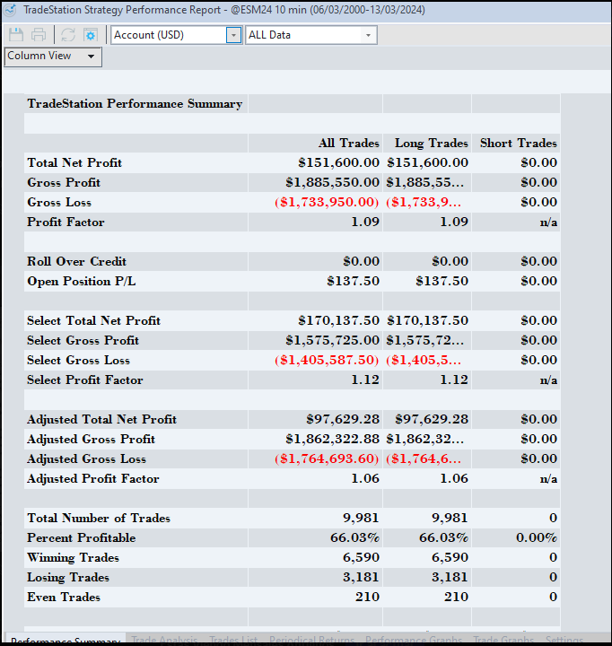
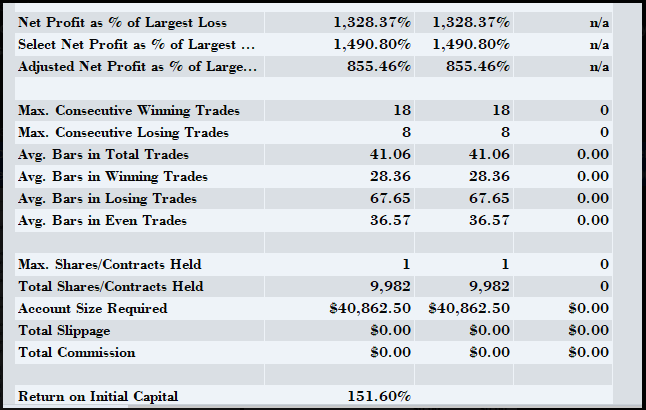
Creo que podría empeorar el beneficio para bajar el riesgo.
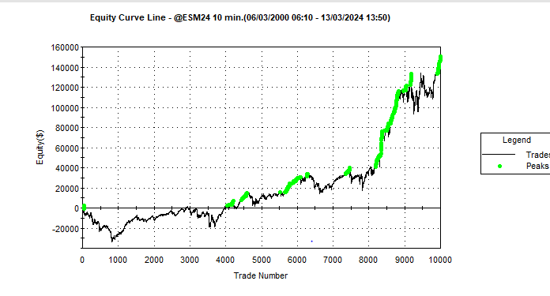
Es complicado que solo Bollinger Bands así te rente. Es complicado. Te faltan comisiones. Hay muchos trades. Bueno, 1.09 en todo caso no sería operable, pero bueno, no es mal comienzo tampoco hay que decir. Que es lo que tú decías ahí. Bueno, para punto de partida seguramente no es malo, no. Podías empeorar el beneficio para bajar el riesgo.
Quería entender que se puede tener opciones metiéndole más variables a lo que tengo en el E-mini S&P.
Si, ese criterio estoy de acuerdo. Es decir, un setup que lo pones, te da 1.09 con 9.000 operaciones. Estoy de acuerdo que es un setup prometedor, para seguir. Pero bueno, habría que mirar lógicamente más cosas. Como bien dices, no hay variables. Estoy de acuerdo en que probablemente es buen setup.
El Bollinger Bands es una muy buena señal, ya lo comenté en la teoría, y tengo pensado… Lo que pasa que no sé. Yo creo que en algún momento, no sé dónde va a ser el límite, pero en algún momento tendré que decidir no hacer todo lo que quería hacer. Porque lo que estoy viendo es que, si hago todo lo que tenía que hacer, será un curso de 500 horas en práctica. Entonces no puede ser. Entonces, en algún momento habrá que ir ya diciendo: bueno, esto no, esto sí. Porque va a ser imposible. Ya os lo comenté: queríamos sobre la marcha, y tenía intención de hacerlo todo, pero cada vez tengo más dudas de conseguirlo, sinceramente. Porque ya llevamos muchas horas. Siguen quedando muchas, tranquilos, siguen quedando muchas. Pero es que, aun quedando muchas, no creo que haga todo lo que quiero hacer, de verdad. Entonces sigo…
Hola, un par de cosas. Hay un error en el código de Curso-ORB-04. Donde dice:
barrasRangoDesdeInicio = timetominutes(HoraInicioTrading - sessionstarttime(0,1))/barinterval;debe ser:
barrasRangoDesdeInicio = (timetominutes(HoraInicioTrading) - timetominutes(sessionstarttime(0,1)))/barinterval;Se puede probar el error poniendo
HoraInicio 1000, y devuelve 7 barras desde las
9:30.
Otra cosa: en el código Curso-VB-01, hay 2 líneas que comentasteis en las prácticas que eran para que no abriera posición y cerrar al instante al haber logrado el objetivo de profit:
Open of next bar < High Then
Open of next bar > Low ThenEntiendo para qué son, pero tenía pensado que EasyLanguage estaba diseñado para impedir leer datos futuros. ¿No existe otra manera de lanzar órdenes condicionando su ejecución en un rango de precios?
Open of Next Bar y lectura de datos
Sí, claro, hay otra manera, otras maneras de hacerlo. Y hay veces que
no se puede utilizar Open of next bar por distintos
motivos, por ejemplo, tener dos datas o algún otro factor.
Pero muy importante: Open of next bar no lee
futuro. Es muy importante entender bien esto. Esto no es
leer futuro. Lo que hace Open of next bar no deja de ser un
truco de lenguaje en el que, al cierre de la vela en cuestión, retrasa
el cierre al tick de apertura, simplemente. No es que lea
futuro: es que espera al tick de apertura para leer el código.
Y “lee tres datos”. Esto en el Mastering sale, en la clase de
Mastering se trata, porque eso es normal. Es algo que no tienen
todos los lenguajes. Es una utilidad bastante interesante, pero no
siempre se puede usar, aunque hay veces que sí viene bien.
Lo que hace es leer del tick de apertura tres datos: el precio de apertura, la hora y la fecha. Solo esos tres datos. Entonces, tú puedes usar esos tres datos del tick de apertura para procesarlo en la barra de cierre del día anterior, pero de la barra anterior. Entonces no lee futuro: simplemente espera procesarlo.
Por lo tanto, yo ahí lo que hago es llamar al
Open of next bar y le digo: si el
Open of next bar es menor que tanto… haz X cosa… Pero no
lee futuro, ¿se entiende? Espera ese tick, solo eso. Leer
futuro sería usar un dato que no dispones en el momento de ejecutar el
código. Aquí sí que dispone, por eso se espera. Entonces espera, lo lee,
y entonces ejecuta la regla que tú le digas.
Así que es perfectamente útil. Y en este caso simplemente es para decir: oye, si hay un gap que supera el precio que yo tengo pensado ya cerrar, ¿para qué voy a abrir? Entonces le pregunto: oye, ¿has abierto por encima de tal precio? Me dice: sí. Pues no, no tienes la orden, entonces no la tires. Ya está.
Esta manera tiene un poco eso. O para otras cosas se puede usar. Pero para sistemas de gaps va fantástico, claro, para sistemas de gaps es fantástico. Pero insisto, no se puede usar en dos datas, por ejemplo. Entonces espero que haya quedado claro esto.
Optimización de filtros
a) Tras ver un vídeo en YouTube donde se mostraba una función de EL con 500 filtros, me surgió una duda. Tomando como ejemplo el listado en EL de entradas y salidas que se controlaban mediante inputs mostrado en la teoría, me preguntaba si haciendo lo mismo con un listado de filtros e intentar optimizar todos mediante su input para ver cuál funcionaría mejor, si esto es una buena práctica o es sobreoptimizar. Es decir, se busca qué filtro de un listado predeterminado va mejor para el sistema atendiendo a su opti para luego solo quedarnos con el mejor.
b) Sobre los filtros, a la hora de elegir alguno (en caso de que así sea), ¿tenéis algún listado estándar o varios que por consenso uséis generalmente, o los filtros los elegís según vuestro criterio o ideas personales en el momento? Es decir, ¿en qué basarse para elegir qué tipo de filtro usar dada la gran diversidad de estos que hay?
Bien, filtros. Lo que comentas de usar un optimizador de filtros, sí puede hacerse. Y de hecho puede ser buena práctica. Puede ser buena práctica y no tiene por qué ser sobreoptimizar. Pero debería estar todo bastante acotado. Es decir, no optimicemos ya el filtro también. Es decir, si el filtro depende de un parámetro de volatilidad, encima no optimicemos el parámetro. Es decir, optimicemos el filtro en un parámetro estándar. O sea, probemos ese filtro en un parámetro estándar, otro en otro parámetro estándar.
Y lógicamente, como siempre, como cualquier regla, habrá que ver el tema de significación estadística, etcétera, el número de trades que tenemos, y podríamos hacer alguna otra prueba de evaluación como Z-Score o cualquiera de estas. Pero se puede hacer, se puede hacer.
Esto no deja de ser un builder. Y por eso yo, y de hecho en el debate interno, es en algún momento usar algún builder para hacer algo de esto. Porque esto al final no deja de ser un builder implementado en EasyLanguage. Por cierto, el código ese de 500 filtros, si nos lo quieres pasar, sería interesante verlo. Yo no sé a cuál te refieres, yo no lo he visto. Ya digo, en general no sé si… 500, 500…
Pero al final esto es un builder implementado en código. Un builder externo, como sabéis, builders que hay: StrategyQuant, Adaptrade Builder… Nosotros tenemos comprado hace muchos años. Se puede usar, pero se puede usar ya teniéndolo muy cerrado. Es decir, el problema de los builders es dejarlos buscar libremente.
Entonces ya digo, esto, por ejemplo, hecho en un builder no sería mala práctica. Pero quiere decir que tú ya tienes tu setup de entrada, de salida, y tratas de buscar filtro para mejorar la entrada, entiendo lo que estamos hablando. Puede ser buena práctica, pero como con todo hace falta buen criterio y prudencia, vigilar…
Un buen filtro debe quitar más malas que buenas. Hay que ver, hay que ver. Una vez siempre, cuando comparas filtro, es cómo va el sistema antes de filtrado y filtrado… Ver un poco los parámetros clave: proteger aciertos, beneficio medio de positivas y negativas, número de positivos, número de negativos. Es lo típico. Porque ahí lo que buscas en un filtro es quitar malos, estamos de acuerdo, ¿no? Es decir, buscas quitar malos. Pero hombre, si solo quita malos es un poco sospechoso también. Tiene que quitar más malos que buenos, pero algún bueno también tiene que quitar. Si solo se quitan malos, eso es feo.
| Señal | Interpretación |
|---|---|
| Solo quita trades malos | 🔴 Sospechoso: posible sobreoptimización |
| Quita más malos que buenos | 🟢 Correcto: comportamiento esperado |
| Quita igual proporción | 🟡 Revisar: el filtro puede no aportar valor |
Entonces, a cuál filtro elegir… Bueno, no tenemos una lista porque nosotros no hemos sido nunca muy amantes de los filtros, eso es verdad. Hemos filtrado poco, por esa, como sabéis, siempre prudencia estadística que tenemos, donde siempre tratamos… Nos pesa mucho la significación estadística, y filtrar es perder trades, eso es obvio. Pero siempre nos ha costado o, dicho de otra manera, los filtros no acaban de aportar mucho o lo suficiente para aplicarlo.
Pero al final, más o menos, si podemos en algún momento, si queréis, tratar de dar algunas referencias… Con el ORB, por ejemplo, ya lo dimos. Y a medida que vayamos viendo sistemas lo iremos dando. Pero lógicamente, a cada tipo de sistema lo vamos dando.
Pero al final no me complicaría demasiada la vida, me explico. Es decir, porque entonces sí que 500 filtros me parece una locura. No me complicaría en exceso la vida, y si tienes que complicarla tanto, seguramente ya es que el sistema no vale. Si tienes que filtrar tanto y buscarle tantos filtros, mejor busca otro sistema, ¿entiendes?
Filtros principales recomendados
Entonces, filtros que hay al final, pues las cosas obvias:
1. La volatilidad
En casi todos los tipos de sistema suele ir bien filtrar, o puede ser una cosa a evaluar. Filtrar volatilidad, y desde ahí cuidado, puede ser:
También hay de este tipo en intermarket, con por ejemplo la curva del VIX. Es decir, los distintos periodos de eso quería… Es una de las cosas que tengo apuntadas ver, pero es bastante avanzada. Y si lo vemos, lo veremos de lo último, porque es una cosa bastante avanzada, pero tiene que ver con filtrar la volatilidad pero por lo externo, con los distintos vencimientos del VIX.
2. Tendencia y régimen de mercado
Lógicamente, el régimen de mercado, lo que técnicamente se llama régimen de mercado, que podemos simplificar que, recordaréis que hay seis:
Es al final un poco porque puedes hacer: alta subiendo, alta bajando, baja subiendo, baja bajando, por ejemplo.
| Tendencia | Volatilidad Baja | Volatilidad Alta |
|---|---|---|
| Alcista | Alcista tranquilo | Rally explosivo |
| Bajista | Corrección ordenada | Crash / Pánico |
| Neutral | Rango estrecho | Alta volatilidad lateral |
Pero bueno, en los dos vectores principales siempre son volatilidad y tendencia. Y eso al final te da un régimen de mercado. Entonces ahí pues hay muchos, régimen de mercado. Desde los más sencillos, con una media móvil, hasta los más complejos, con coeficientes de Hurst. O sea, al final hay muchas cosas a mirar.
Pero repito, yo soy muy amante de la simplicidad, como sabéis. Y por lo tanto, eso aplica a todo, también a los filtros.
ApoloApolo es un sistema que está hoy en día operando. Es un sistema que opera largo y corto, pero que de hace bastante tiempo —aunque al principio no era así— se decidió hacerlo. Se decidió hacerlo en determinado momento, se decidió probar si aportaba valor hacerlo, como ya sospechábamos. Pero al principio operaba con el mismo set en el largo y en el corto.
Algo que hay autores que recomiendan —y que en sí es verdad que puede ser una buena práctica— pero que no necesariamente no hacerlo es mala, se entiende. Es decir, es preferible… puede serlo, pero sobre todo en equity normalmente hay especialistas de cortos, especialistas de largos. Porque, por lo de la volatilidad que os decía realmente, y por la dinámica propia del mercado, donde el régimen de mercado es muy alcista y por lo tanto es distinto. Es decir, el largo normalmente deja correr, quiere correr. En cambio el corto pues no quiere correr. Al final, corto es un sistema más de oportunidad rápida. Es bastante obvio. Pues bueno, bastante obvio, pues por esto:
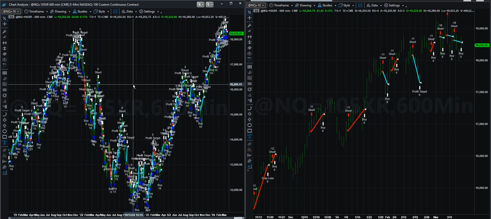
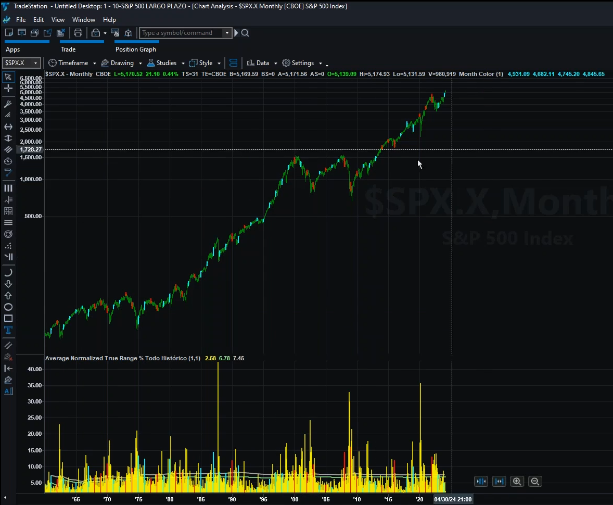
Pues esto. Por esto. Porque digamos que el sesgo de largo plazo es ligeramente alcista, ligeramente alcista, viento de cola. Claro que hay periodos que pueden ser de muchos años de lateral, de corrección, o congestión, etcétera. Hay muchas variedades. Pero en el largo plazo pues es más bien tendente a subir, por lo tanto ya añade un sesgo distinto.
Separación de parámetros largos y cortos
Entonces bien, Apolo opera ya hace tiempo con parámetros para corto, parámetros para largo, y hay distintos sets dentro del mismo sistema. En este caso, el mismo set opera con distintos sistemas.
De hecho, hemos hecho un pequeño cambio en Apolo que no es de las revisiones que hay pendientes —de cosas de evoluciones— sino una simplificación del código que implica al final quitarle un input. Y de hecho os lo digo abiertamente: en este caso este sistema usa el ATR, y el ATR en algunas épocas se ha utilizado y ahora ya hace un tiempo que no recuerdo que no se optimiza, y está fijo. Está fijo en —creo— que está fijo en 15 y en 15 barras, porque en su momento ya se hizo un estudio muy exhaustivo y se ha revisado hace poco, y es una zona que está bastante estabilizada, con mapa —que luego veremos mapas y demás— y por lo tanto nos gusta que esté ahí.
Diferencia entre TP largos y TP cortos
Bien, el corto lleva una época mala y que en algunos sets se ha convertido en demasiado mala. Entonces “demasiado mala” se ha ido degradando.
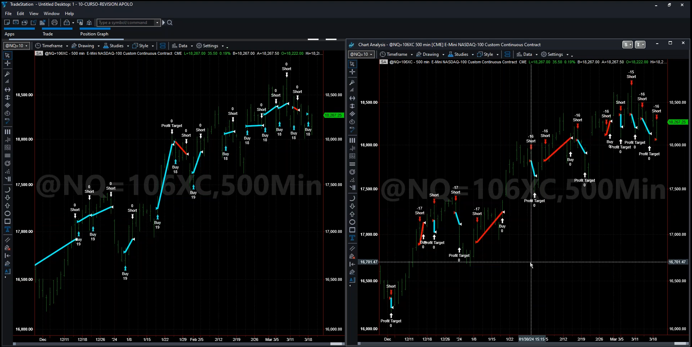
El sistema de largos —ya digo— tiene distintos tipos, pero como veis, en general… Por ejemplo este, este trade es este trade, por ejemplo. No es un trade de tres o cuatro días que hace un TP bastante interesante:
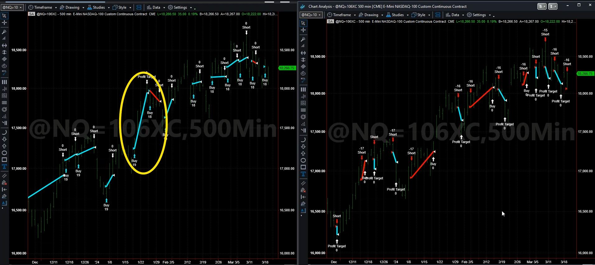
En cambio los TPs del corto es que es otra cosa: es de muy poco recorrido.
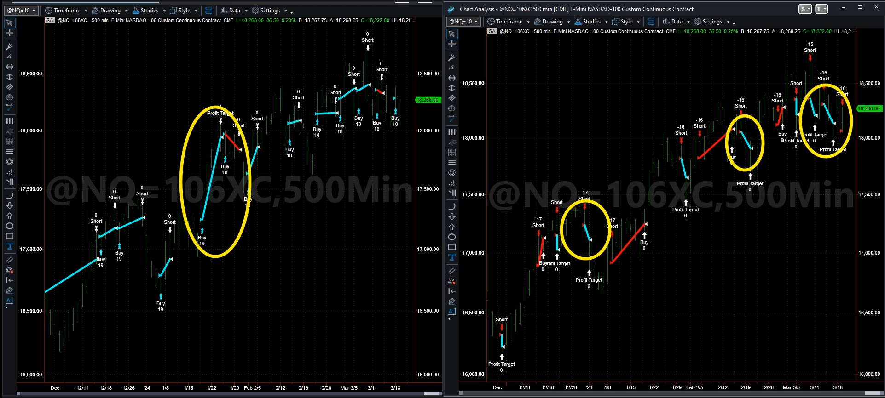
Esto es lo que busca el corto: corto tiene un TP siempre más cercano. Y os lo comentaba varias veces en la teoría, también en la práctica, y de cierta manera pensando en Apolo. Es decir, realmente una de las mejores maneras de bajar el riesgo es tener un TP cercano. Es decir, en datos de riesgo lo baja mucho porque sale rápido.
Y de hecho Apolo trabaja con SL en el lado corto mayor que TP. Es un stop que salta pocas veces, y ese es su problema: que en los sets que van… Hay sets que dejan correr un poco más, hay sets un poco más parecidos al largo… No tanto, pero hay algún set más parecido. Y hay sets como este de la derecha que veis que es muy, muy rápido, que hace TP muy rápido. Entonces, cuando tiene 2, 3, 4 fallos, y son fallos de cierta importancia —como alguno que veis aquí— pues bueno, duele más.
| Característica | Lado Largo | Lado Corto |
|---|---|---|
| TP típico | Amplio (dejar correr) | Cercano (salida rápida) |
| Stop Loss | Proporcional al TP | Mayor que el TP |
| Duración trades | Días a semanas | Horas a pocos días |
| Filosofía | Tendencial | Oportunidad rápida |
¿dónde empieza esto? Bueno, esto empieza con el protocolo de supervisión. El protocolo de supervisión, ya os lo comenté en la teoría, es algo en lo que tenemos campo de mejora. Ya tenemos cosas hechas, pero tenemos campo de mejora. Y de hecho, pues mira, una de esas cosas que os comenté que en el curso nos puede servir a nosotros aprovecharlo es esta. Más que mejorar en darnos cuenta es automatizarlo un poco.
Porque es verdad que el protocolo de supervisión lo puedes complicar todo lo que tú quieras, pero a la hora de la verdad —no solo, pero normalmente— si tú… Digo para vosotros que empezando, que no os volváis locos. Sobre todo aquellos que estáis empezando: hay muchas maneras de hacer esto, y una de ellas es mirando un Performance Report :
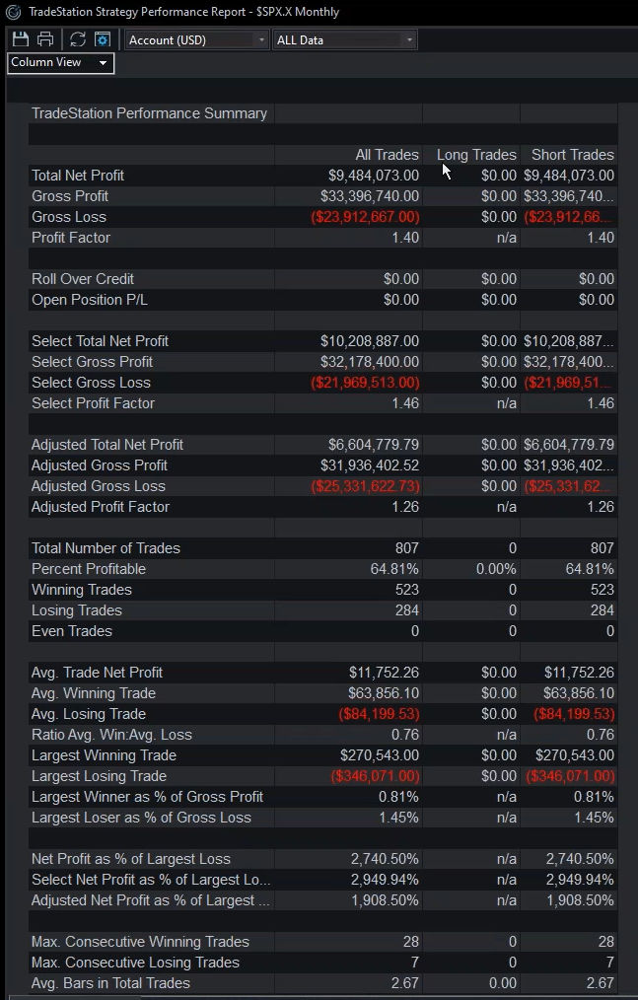
Mirando la curva de drawdown:
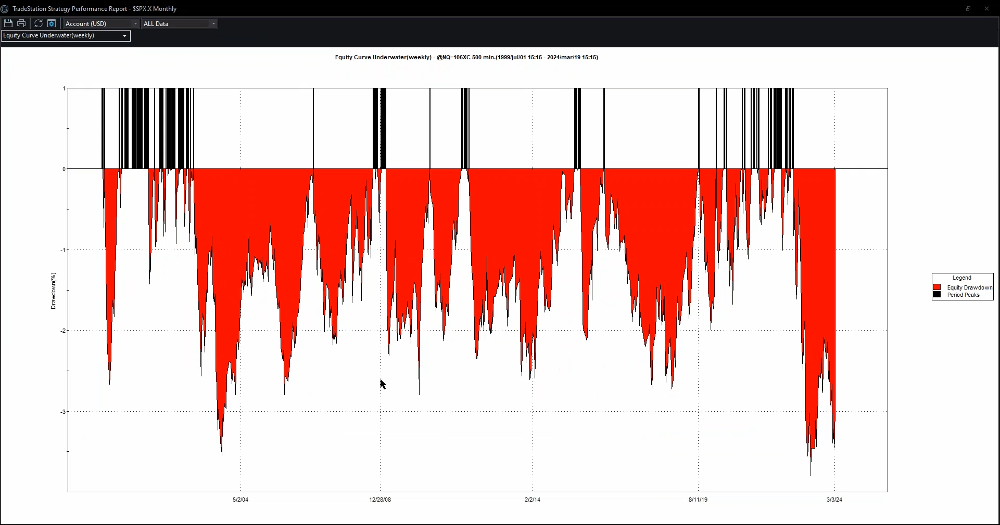
Mirando la curva del sistema:
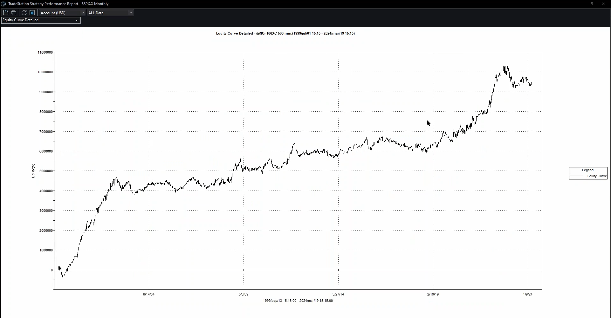
Los trades:
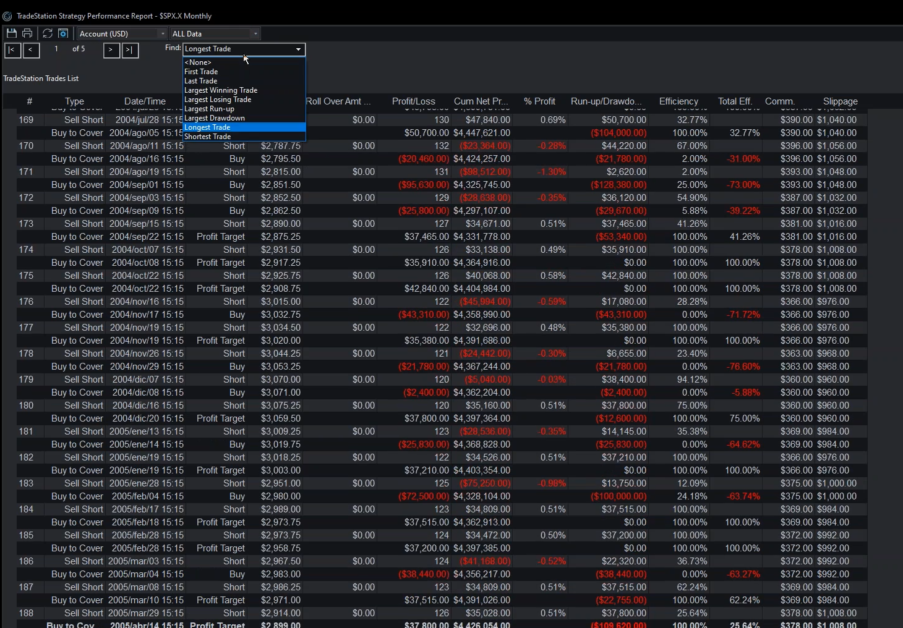
Puedes mirarlo. Una de esas maneras es esta. Lo cual tampoco penséis que obligatoriamente hace falta tener un código y todo súper complicado. Pero bueno, sí que es verdad que una de las cosas que caracteriza la profesionalización es esta: automatizar más las cosas.
Pero como al final aquellos que ya nos conocéis —no solo de ahora del curso sino hace tiempo— ya sabéis que me quejo siempre de la falta de recursos y de tiempo, es así. Porque al final todo esto lleva trabajo y hay que decidir, cuando eres una empresa o un proyecto, es igual, tienes que decidir en qué gastarse el tiempo, los recursos. Y al final no es infinito, igual que no lo es el dinero tampoco lo es el tiempo. Y hay que decidir dónde haces cosas. Y por eso tenemos siempre una reunión mensual, damos prioridad a una cosa, a otra. Y hay cosas que están en reuniones de hace años porque no hay manera de que se considere que es prioritario respecto a otras cosas. Y esto hace que hayan cosas que a lo mejor podrían hacerse mejor pero ya están bien así, porque dedicarle un montón de horas pues no te renta.
Vale, entonces aquí, por ejemplo, nosotros hoy en día sacamos estos datos:
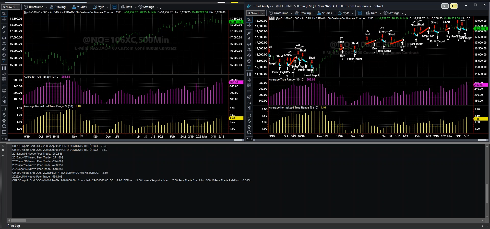
¿Qué datos sacamos? Sacamos simplemente datos que ya veíais ahí en el
Performance Report: Pero que los sacamos vía el
print.
Que esto es todo vía código. Este código —ya me adelanto por si alguien lo pregunta— Alberto no me ha autorizado a entregarlo todavía, porque es que lo quiere mejorar antes de entregarlo. Esto se llama orgullo de programador. Entonces yo entiendo que antes de acabar el curso —ya os lo dijimos— que lo haremos, ya os daremos un código y puede que algo mejor. Yo creo que ya está bastante bien, pero Alberto dice que no, que ni se me ocurra entregarlo ya, que lo quiere mejorar. Entonces… Pero bueno, al final informa * del mayor drawdown, cuándo lo hace, * cuándo hace peor trade, * y cuándo hace peor serie de trades.
Que son datos de riesgo bastante importantes.
Métrica N-trades y porcentaje
Tenemos uno que hacemos en revisiones más profundas vía Excel. Ya os lo comenté en la teoría, y creo que lo dije en la teoría, que teníamos planes. Es una de esas cosas pendientes, a ver si aprovechando lo acabamos de desarrollar. Que es lo de contar N trades. N trades, pero no en valor absoluto sino en porcentaje. En porcentaje, porque en valor absoluto es muy complicado porque se desvirtúa. Este es un problema: a veces hay que calcularlo en porcentaje. Y cuando acumulas trades eso ya no es tan fácil a nivel de histórico, pero creo que lo conseguiremos.
Puntos clave detectados en Apolo
Entonces aquí ahora mismo pues vemos que este sistema hizo peor trade en octubre del 23, y que su drawdown récord lo hizo histórico en 380 en mayo del 23:
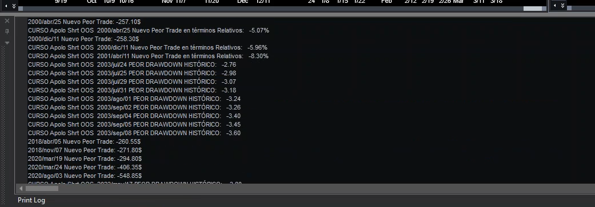
Tras ese se revisó, y este ahora vuelve a estar cerca. Y ese set, estando justo, sigue operativo:
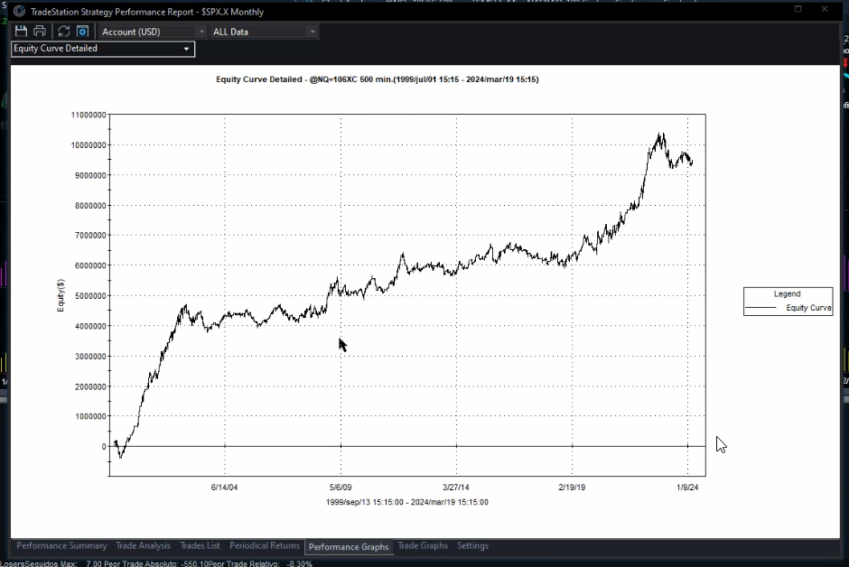
Luego llegaremos a esto, porque hoy veréis incluso os enseñaremos los sets que cambiamos y toda la manera en que lo analizamos.
Entonces, en un momento determinado salta la alerta, que ya nosotros ya veíamos que no iban finos. Es decir, ya lo ves, es que la mayoría de veces tú ya lo ves. Pero lo cual no quita que no vaya bien tener un código que te avise, porque así pues puedes olvidarte.
Estos son distintos sets, distinta combinación de parámetros de la misma estrategia. Sí, Apolo hace esto.
Bien, pues entonces vamos con la revisión. La primera cosa que hacemos es: un mapa de optimización de prácticamente, o si no prácticamente, todo el histórico
Mapa Short:
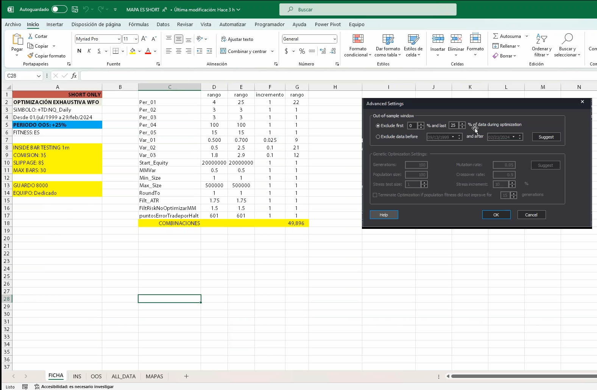
Todo parte lógicamente de una optimización que la hacemos con Out of Sample detrás. Es decir, cercano del 25% porque, mirando los cortes, pues se ve que puede estar ahí interesante. Y todo el histórico disponible, desde julio del 99 hasta el 29 de febrero del 2024. Esto lo hacemos en datos de TickData que nosotros compramos, pero podría haberse hecho perfectamente en los datos de TradeStation.
Inputs seleccionados para la optimización
Con tres dólares de comisión, con ocho dólares de slippage, etc.
Pero no se hace de todos los inputs. No se hace de todos los inputs. Los inputs que tiene el sistema son todos estos:
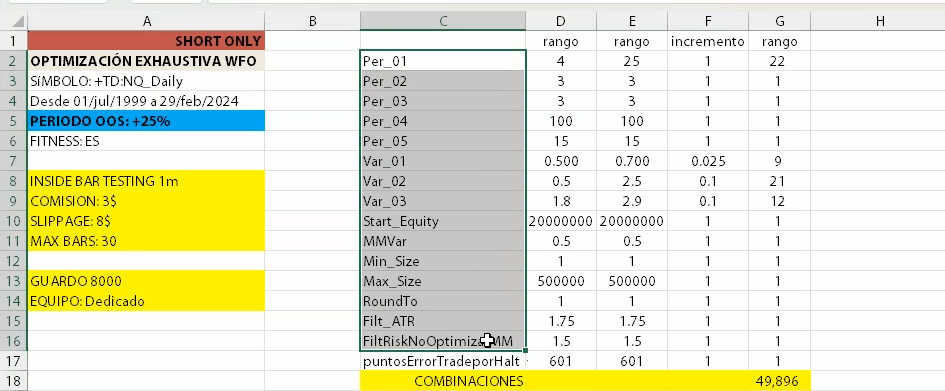
No todos son optimizables. Los que les hemos dejado el nombre:
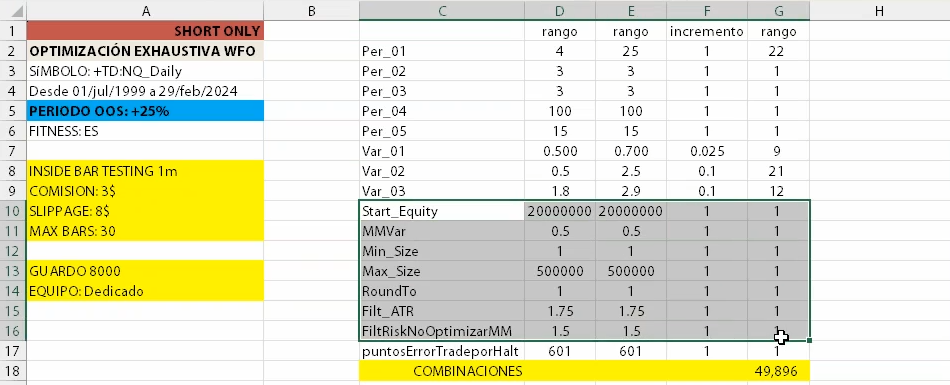
Son del algoritmo. Bueno, este último
puntosErrorTradeporHalt es cuando hubo el halt en
el COVID. Tuvieron varios halt y hubo problemas de ejecución. Y
entonces consideramos que ahí hay un factor que se benefició de manera
artificial, y lo penalizamos. Lo penalizamos en 600 puntos ahí, porque
la ejecución no fue real. Eso puede pasar, probablemente pasa, por un
tick y el slippage lo controla. En este caso no fue
así: el gráfico marcó ejecutado y ese día, para que me entendáis —y digo
porque esto…—
Imaginaos que aquí se cierra una operación:
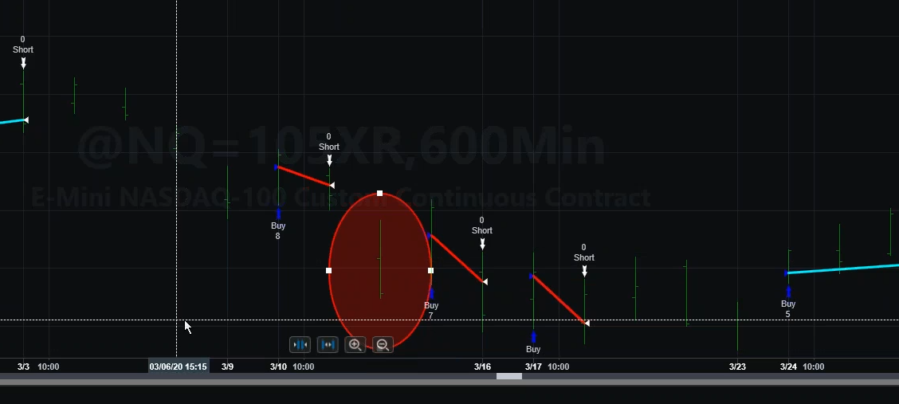
Imaginad que habría aquí, pero realmente, como el mercado es falso, no te deja ejecutar: ejecuta 600 puntos por debajo. Entonces, bueno, pues eso lo implementamos en el código para que en el optimizador no sacara partido de una situación que fue falsa. No pudiste operar ese precio, aunque ponga que abrió ahí.
Entonces, cuando hay algo así que no es real, que te has podido
aprovechar, o que penaliza, pues es mejor dejarlo puesto en el código
porque así, si tú optimizas, no saque partido de una cosa que no fue
real. Es una cosa muy puntual, pero bueno, os explico para que lo
sepáis: es ese, esos puntos que está implementado y está como
input puntosErrorTradeporHalt.
Inputs
Y luego el resto * filtRiskNoOptimizarMM son variables
de la gestión monetaria, * al igual queMMVar, que es el
porcentaje, es la f, la f de la gestión monetaria. *
Start_Equity El saldo de la cuenta inicial, *
Min_Size el lote mínimo, * Max_Size el lote
máximo, de tal manera que si le pones uno, pues lo bloqueas, *
Round_to redondea a uno si quieres redondear a otro número,
y ya está.
Todas estas son variables de la gestión monetaria, que veremos en algún momento, veremos en algún momento en detalle. Esto lo comenté en la teoría cuando haremos alguna clase dedicada solo a la gestión monetaria.
Per_01 Hay una variable del indicador.Per_02 Hay otras dos variables que no se suelen
tocar.Per_03Per_04 Esta tampoco. Esta es, de hecho, una prueba que
se hizo una vez de un filtro que está ahí, no sé, creo que alguna vez lo
hemos configurado, pero nuevamente quiere decir que no actúa.Per_05 Ese es el valor que os decía del ATR
que tampoco se optimizaba.Variables realmente evaluadas en el mapa
Entonces, ¿qué variables tocamos?
Per_01 Hay una variable del indicador.Y luego vienen los tres —podemos decir— filtros… Filtros en el
sentido estricto, sino que es un porcentaje multiplicador: -
Var01 al final es un modificador de la orden de
entrada - Var02 es TP -
Var03 es Stop
No hay más.
Entonces aquí solo se analizan en el mapa estas cuatro variables: el indicador, el multiplicador de entrada, el multiplicador del TP y el multiplicador del Stop. Esos cuatro es lo que se hace en el mapa.
Cantidad de combinaciones y por qué se usan tantas
Para hacer un mapa guardamos GUARDO 8000, todo lo que
nos deja TradeStation, que son 8.000.
¿Por qué? Porque al final en el mapa me interesa ver realmente cuántas más combinaciones posibles mejor. En el mapa es importante que haya los menos huecos posibles entre combinaciones. Por eso idealmente hay que hacer la exhaustiva. Exhaustiva.
Entonces bueno, esto al final da 49.000 combinaciones, que en exhaustiva pues se hace depende del equipo, pero tardaba unas horas. Con el LIBB activado y todo, que eran unas horas, depende lógicamente de la potencia de la máquina.
Exportacion resultados de optimizacion
Como ya visteis en la teoría, o veis en cualquier optimización, de Tradestation:
AllData que reúne los dos periodosInSample que es el optimizadoOutOfSample que es el no optimizadoEn este caso el último 25% del histórico. InSample, OutOfSample, y AllData que los suma todos. Estos datos al final los llevamos a Excel.
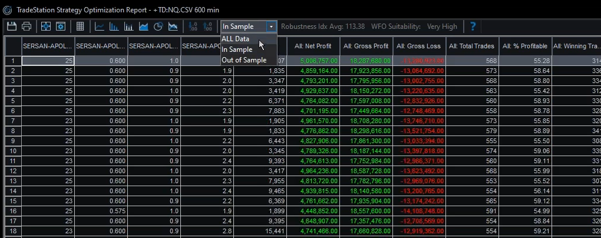
Todas las hojas simplemente hacemos una estadística descriptiva.
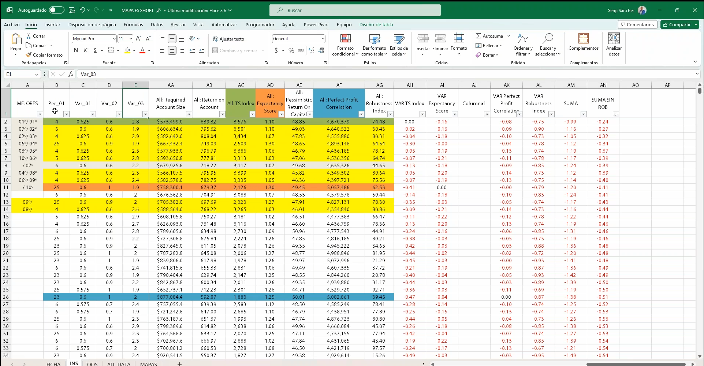
Abajo del todo también, cuando hay 8.000:
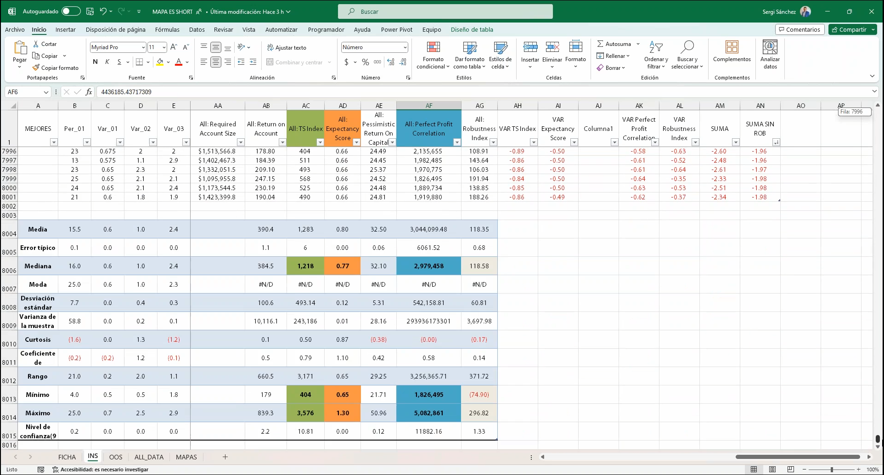
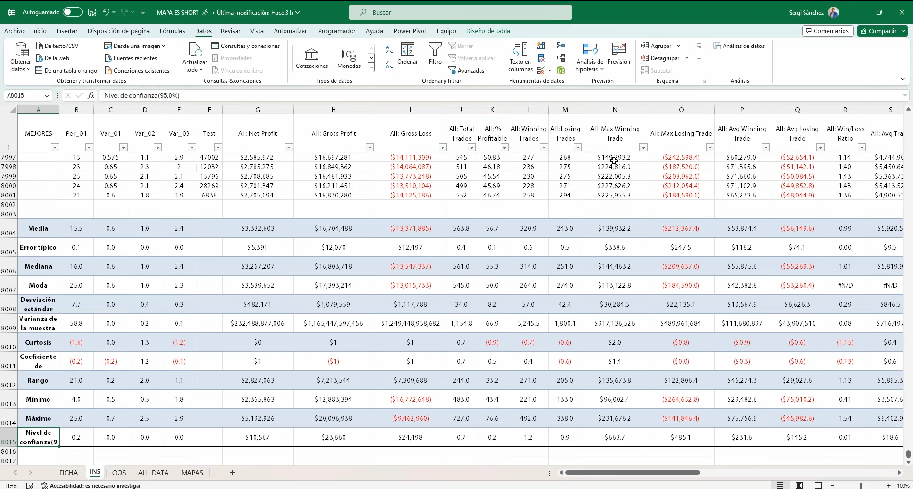
Esto sale directamente del propio Excel en Datos > Análisis de datos > Estadística descriptiva, que saca todos los parámetros que tú le has puesto. Aquí abajo:
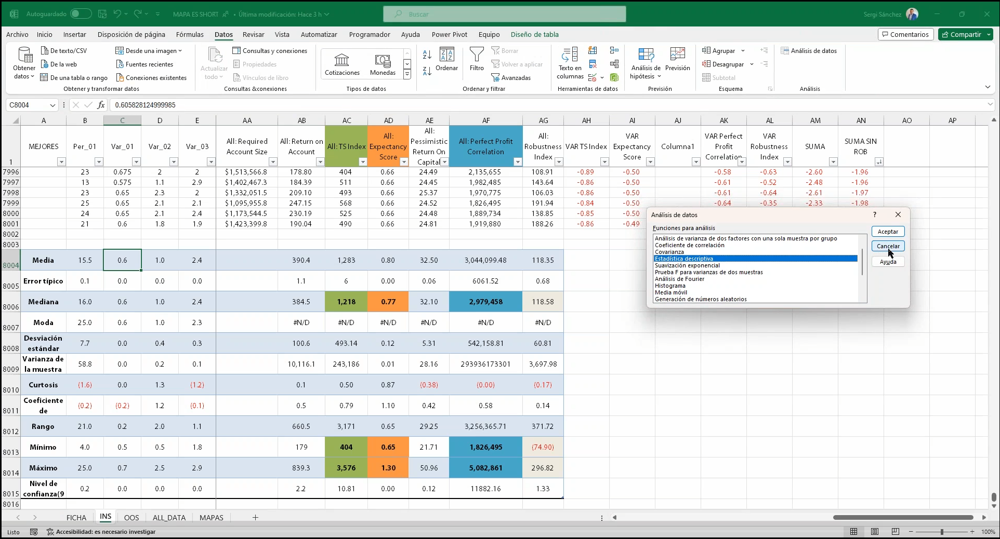
Pues marcamos por ver más rápido mínimo, máximo y mediana. Es mejor estimador para la mayoría de casos la mediana que la media. La mediana es mejor estimador nuevamente cuando hay outliers, cosas bastante habitual en el trading. Pero bueno, que también si usas la media no pasa nada. Si la media, si la media… La media no son iguales la moda. Recordar que eso es, en este caso, una moda, pero si eso será recordar que es una de las características que tiene una distribución normal. Que lo visteis, o lo vimos esto en la clase de portfolio. En la práctica hay una clase de portfolio donde se habla del VaR, el VaR, todo esto, y ahí se ve bastante todo este tema.
Normalización de métricas y selección de parámetros
Hacemos como ya os expliqué por norma siempre los Excels. Y es un Excel de búsqueda de zonas muy inicial.
En un sistema que no conocemos mucho mejor no lo hacemos. Pero normalmente hacemos esto: normalizamos las diferencias entre tanto TSI, Expectancy, como PPC y Robustness.
Recordar que Robustness compara beneficio medio analizado con beneficio medio analizado Out of Sample con In Sample. Y automáticamente se normaliza con el valor máximo. Y de ahí sale una suma de los cuatro, de las diferencias respecto a su máximo:
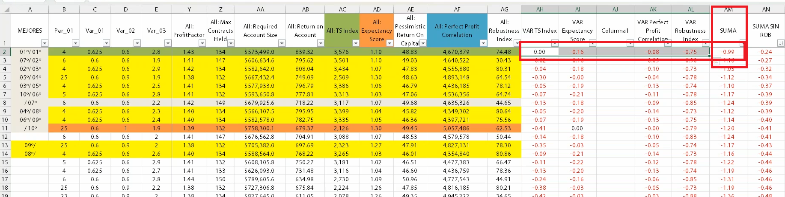
Aquí lo veis, a ver, aquellos que entran con este valor, si veis que sale la fórmula:
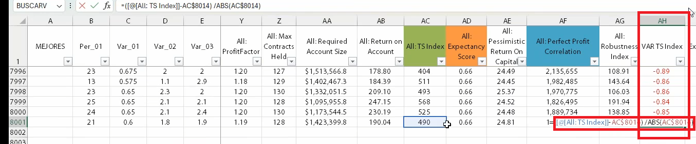
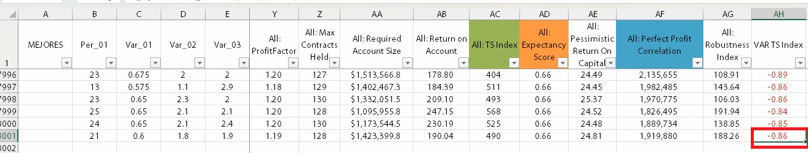
Y es este valor All: TS INdex menos este valor
Maximo dividido por este valor Maximo. Y te da
este valor VAR TS Index
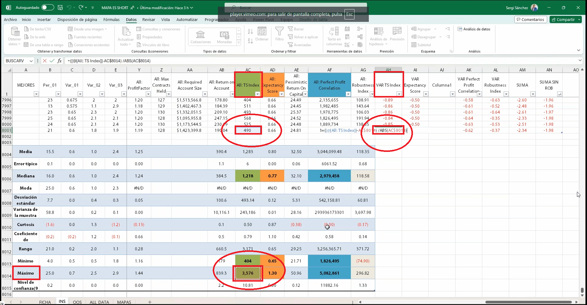
Eso es normalización típica respecto al máximo. Lo cual te dice que este valor es del máximo, es un 0.86 del máximo. Simplemente para pues sumarlos todos. Y de esta manera buscas un equilibrio entre todos.
El que tiene un valor de suma más bajo quiere decir que
en estas cuatro referencias cumple más equilibrio y entonces da buenas
notas.
Este, por ejemplo: * en verde pintamos el mejor TSI, * en naranja pintamos el mejor Expectancy Score, * y en azul pintamos el mejor PPC
Pero luego, repito, se ordena o bien por SUMA o bien por
SUMA SIN ROB
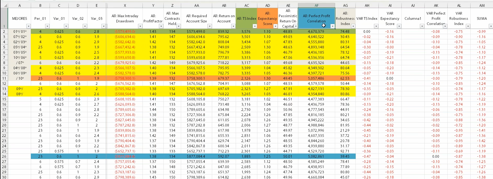
SUMA o bien por SUMA SIN ROB ¿Cuándo se usa
uno u otro? Cuando optimizamos con el Out of Sample al final,
es decir, ahora en la actualidad o lo más cercano a la actualidad,
entonces usamos SUMA. ¿Por qué? Porque el Out of
Sample es cercano y nos interesa.
Al final, usar el valor de Robustness o no usarlo para los cálculos de esta suma, es simplemente si yo quiero sobreponderar o darle importancia a algún dato que compare el InSample con el Out of Sample. El único dato aquí que compara eso es el Robustness. Robustness compara justamente el rendimiento de un periodo con el rendimiento del otro. Por lo tanto, si yo quiero darle más peso al Out of Sample, usando esta variable Robustness, lo hago.
Luego, de hecho, si ordeno por esta variable, Pues al final estos son los sets que han ido mejor en el Out of Sample.
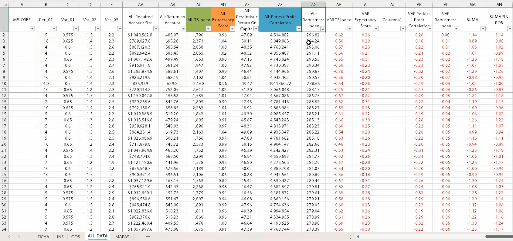
Pero solo eso tampoco lo quiero, porque también quiero tener en
cuenta las otras variables que tienen en cuenta todo el histórico. Y por
eso eso lo hace la SUMA, porque la suma tiene en cuenta
este, este, este y además este:
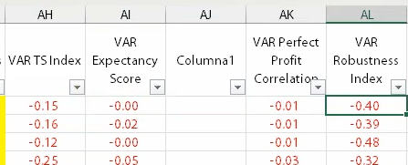
En cambio, SUMA SIN ROB no tiene en cuenta
VAR Robutness Index . Provoca otra ordenación distinta que
lógicamente es parecida muchas veces, no, pero no es exactamente.
Por qué se usan 8.000 combinaciones
Bien, esto (ahora vamos al mapa, luego iremos a los sets). Aquí no me importa los sets, no me importa si los sets son iguales o si no. Porque he elegido 8.000, elegir 8.000 es elegir muchos valores. Elegir 8.000 al final, recordar que esto funciona, que optimiza por una función… (Este creo que es el mapa, es Short, pero se ha hecho para los tres, he escogido este que ha sido aleatorio.)
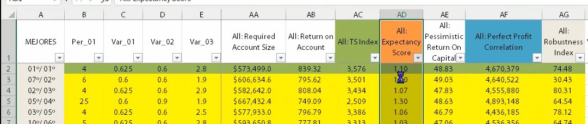
Yo optimizo por esta variable, por Expectancy Score, y
escoge los 8.000 mejores en InSample. Los 8.000 mejores.
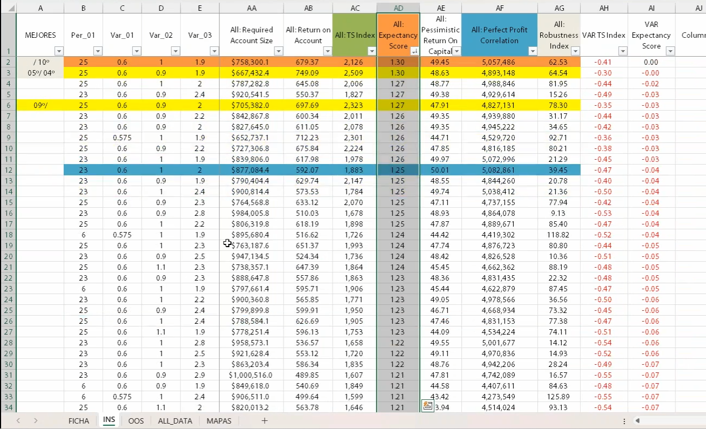
Y de ahí, de esos 8.000 que ha encontrado, calcula qué hubieran rendido en el periodo Out of Sample. Lo pone aquí:
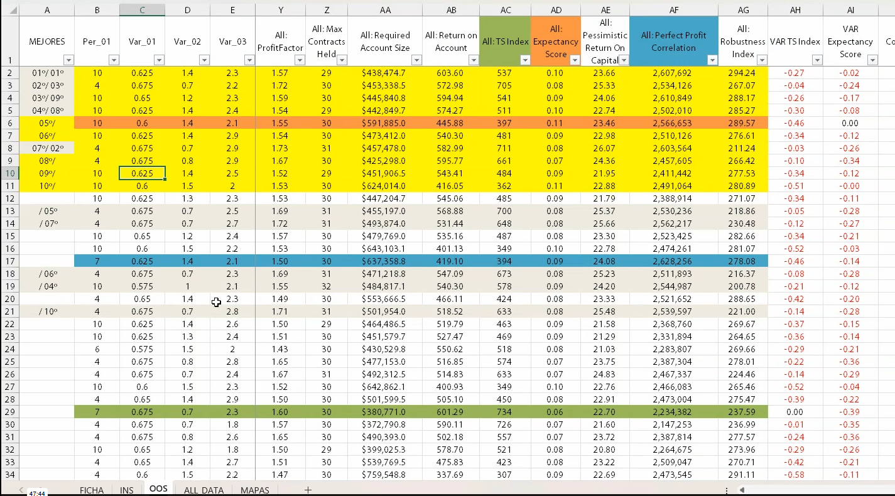
Y luego suma los dos aquí:
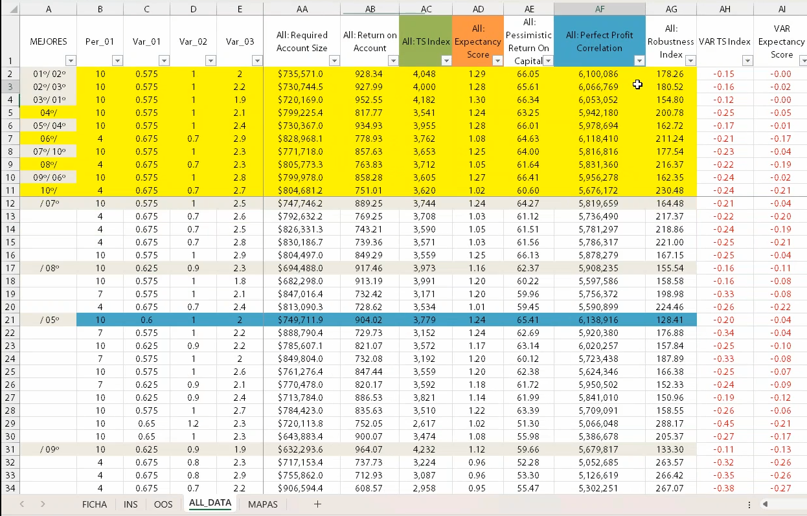
El que manda es el InSample. El que manda en el sentido que es el que controla el resto de datos.
Por lo tanto estaremos de acuerdo que lo bueno es que el OutOfSample e InSample se parezcan. Pero eligiendo 8.000 me da igual, porque además he dejado elegir demasiado. Por lo tanto lo que encuentre como mejor dato aquí puede ser fruto de una sobreoptimización. Luego veremos que no es tan distinto, pero podría ser.
Utilidad real de tener tantas combinaciones
A mí, ¿para qué me sirve tener 8.000? Pues para hacer esto: Para hacer mapas.
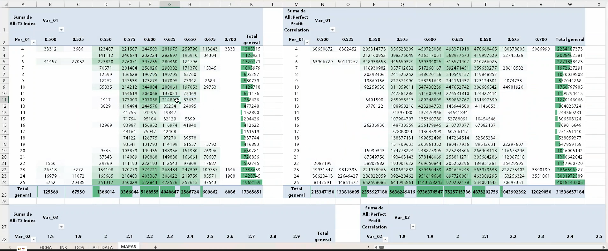
Los mapas en esta estrategia, ¿cómo planteamos los mapas? Yo ya os comenté en la teoría que nos gusta mucho verlos en tablas a nosotros, tablas dinámicas. No es necesario hacer el típico mapa gráfico y visual.
Por ejemplo, MultiCharts lo hace, está bastante chulo, está bien, es muy aprovechable de MultiCharts. Pero TradeStation no lo hace, entonces nosotros lo hacemos en Excel. O sea, este mapa a mí no me dice nada más,
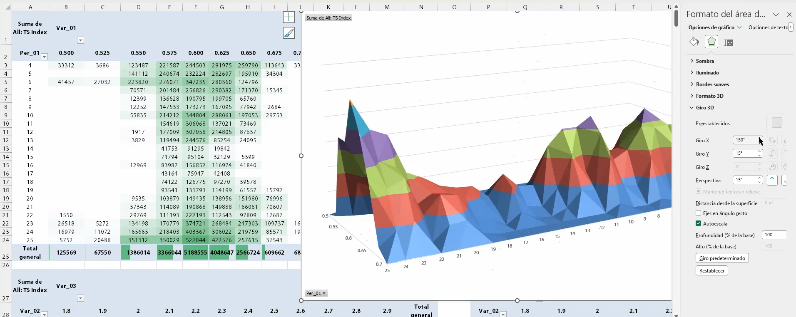
a mí esto me dice más, un poco me dice lo mismo que aquí, pero lo veo mejor aquí:
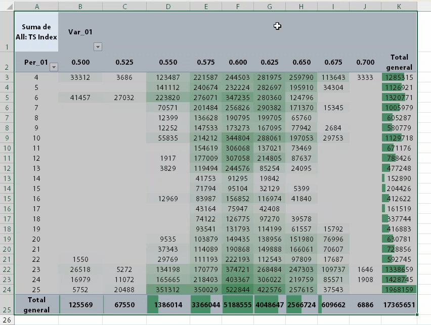
Problemas del efecto “escala” al visualizar mapas 3D
Además del efecto mapa, es el efecto escala que siempre se llama de los gráficos. Pasa igual aquí, porque tú dices: “joder, está muy puntiagudo”… ¿Seguro? Vamos a hacerlo menos puntiagudo:
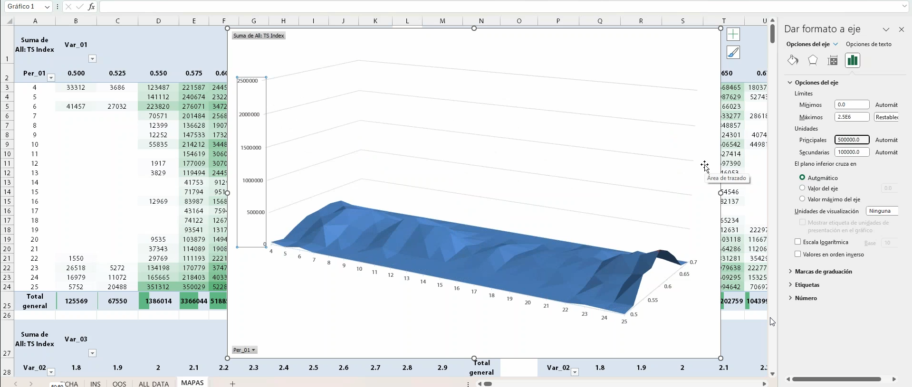
(Ironía) “Ya está, mucho mejor. Fíjate qué llanura más magnífica de parámetros tenemos. Es una cosa súper estable y súper robusta. Ya está, sistema a operar…” (Ironía)
¿Me entendéis? No. Es decir, que al final el efecto escala condiciona totalmente el efecto visual.
El truco de MultiCharts: la marca de agua
Para eso tiene MultiCharts aquello del nivel. Ya lo visteis en la teoría, en algún sistema lo hemos enseñado. Bueno, creo que el otro día en el sistema que hicimos al principio lo enseñamos también. Lo enseñamos, que ahí enseñamos MultiCharts. Por eso aquí pues vamos otra vez más a Excel, vamos enseñando un poco de todo. Eso es lo de la marca de agua, ¿os acordáis?
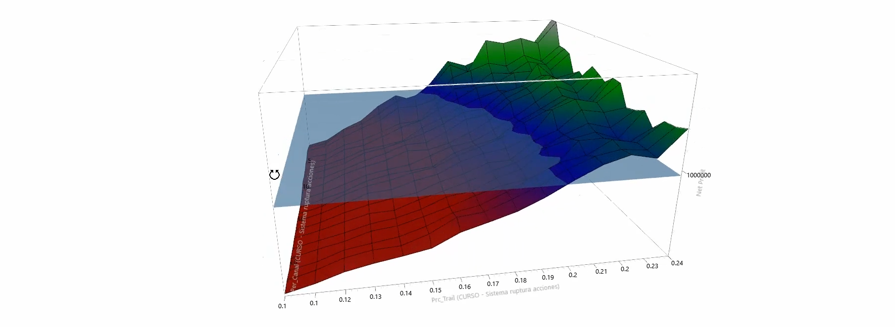
La marca de agua viene muy bien. Evitas un poco ese efecto. Con esto, ese efecto escala lo puedes tú jugar así, porque el efecto visual cambia totalmente la mente. Entonces, así con esto puedes jugarlo. Entonces aquí sí viene muy bien porque es una herramienta que ya se ha pensado para eso, tiene esto para mitigar, y viene bien. Pero en Excel a mí me gusta más la tabla.
Por qué preferimos tabla dinámica frente al gráfico
Prefiero la tabla, la tabla en Excel. Recordar que es una tabla dinámica que Excel hoy en día hace de manera automática. Tú simplemente seleccionas los valores y le dices aquí insertar tabla dinámica, y ya está hecha. De verdad, no estoy exagerando. Es un poco saber de Excel.
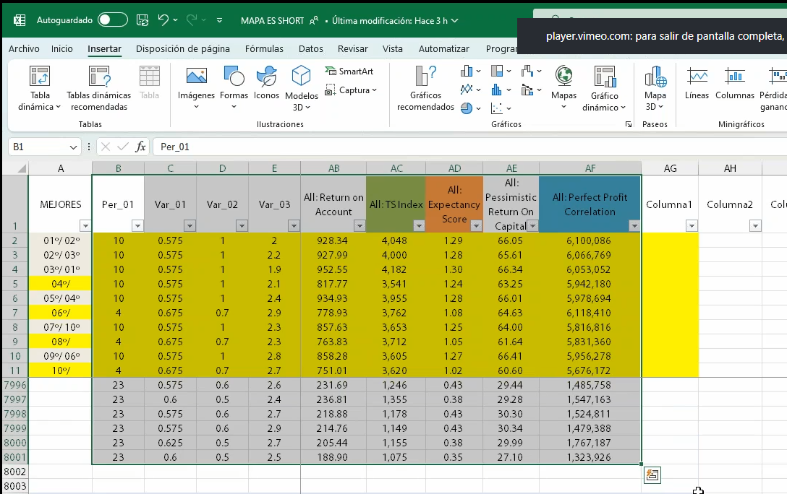
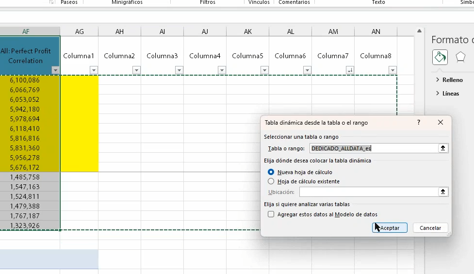
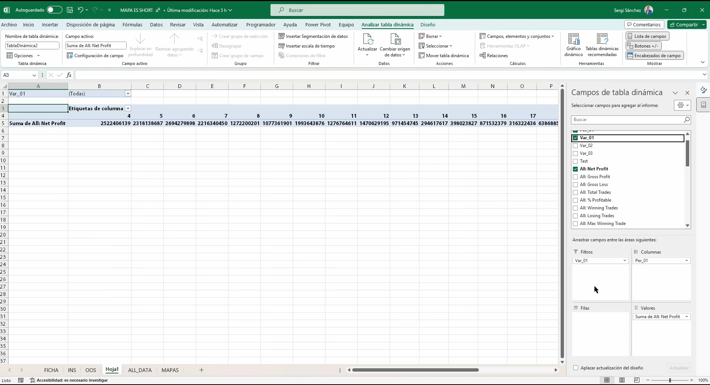
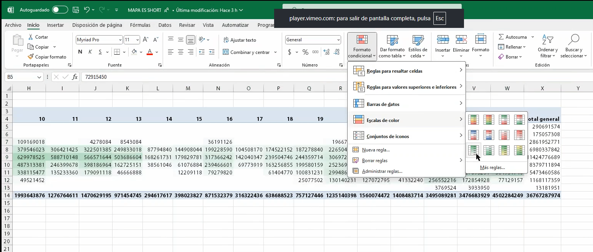
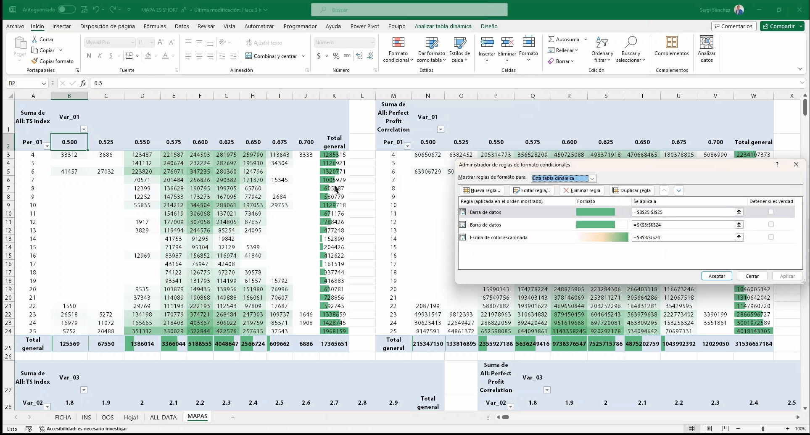
Lo peor es el blanco, que no haya nada de verde. Al final, lo peor es que no haya valores a nivel de mapa. Solo blanco, verde, y entonces ya claro, el blanco es el que tiene poco valor. Es casi blanco, es parecido a este pero no está. Entonces este es perfecto. Así pues bueno, se ve muy bien por un único color.
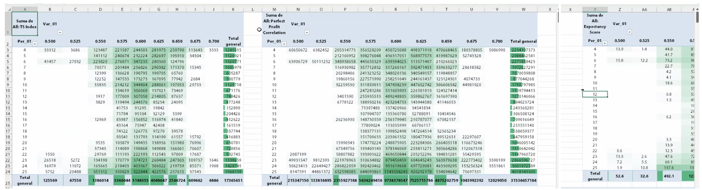
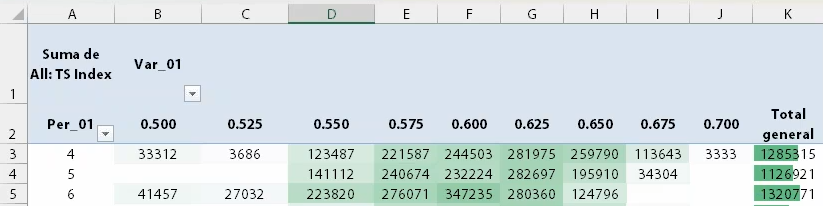
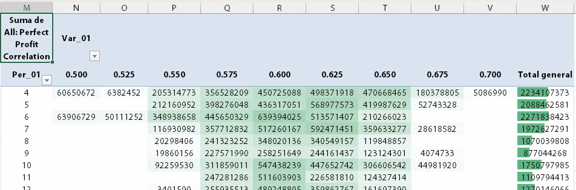
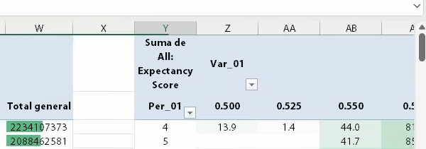
Esto realmente no es necesario.
Lo he hecho para demostraros que no es necesario, porque al final el
vector clave que hace que el mapa sea bueno o malo es el hecho de
aparecer. Y lógicamente su valor también tiene
importancia, pero es al final lo que hace es acumular todos los valores
que dan 4.05 en el resto de variables, todas, y la relación a uno, y te
dice qué valor da la variable de la suma. Podría usar el producto,
podría usar otros.
Ahora, para que veáis de dónde viene esto, ya lo vimos en la teoría, es aquí:
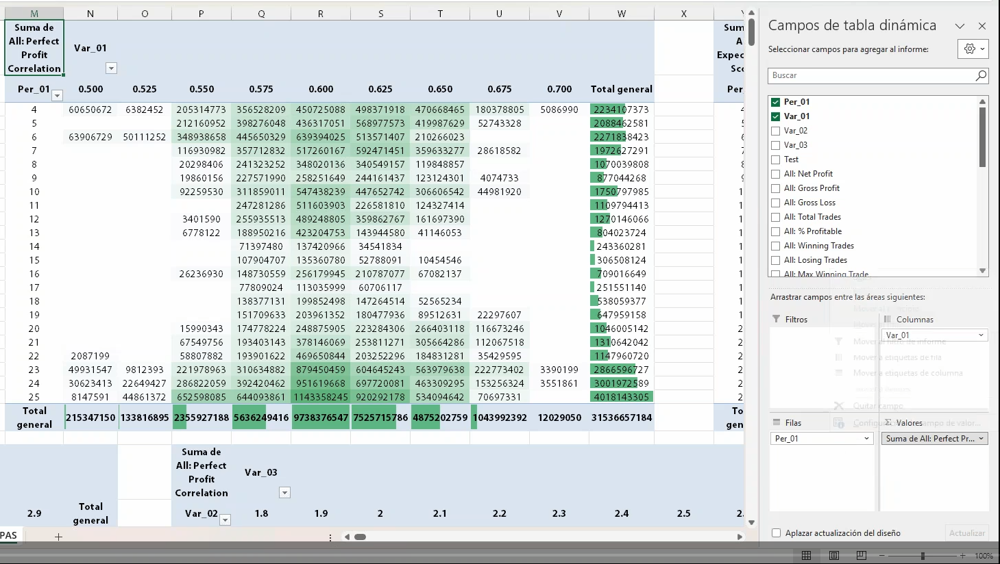
En una columna está Var_01, en fila está
Per_01, y los valores que calcula es suma de
All_PPC (Perfect Profit Correlation):
Esto es configurable. Esto ya digo, es pelearse también poco, usar la ayuda de los programas. Es decir, los programas la mayoría tienen buenas ayudas. Usar la dinámica y poco a poco mirar vídeos, decir, hay cosas:
O sea, el curso tratamos que sea completo, pero es imposible que sea profundo en Excel, profundo en estadística, profundo en econometría, profundo… Es imposible. No hacemos mil horas o más. Entonces claro, damos las puntas, las cosas clave, enseñamos lo que nosotros hacemos. Es así, esto es lo que hacemos nosotros. Y a partir de ahí, claro, mira, voy flojo de Excel, bueno pues vamos a buscar un curso de Excel y mejoro mi Excel. Voy justo de programación, bueno pues voy a buscar un curso, voy justo… Tienes que ir reforzando un poquito aquellas áreas. Porque tratamos de explicarlo por encima lo que no es propiamente la actividad. Como en este caso Excel no lo usamos como actividad principal, lo explico un poco, pero claro no puedo en profundidad, porque si no es que como digo estaríamos 2.000 horas.
Por qué se usa “suma” como agregación y qué aporta visualmente
Entonces, aquí dentro de suma yo podría haber elegido
otro: elegir el recuento, promedio, máximo, mínimo, producto… Vamos,
suma, y ya está. Eso es la suma de todos los valores. Entonces al final
el colorcito es muy visual. Y también los totales generales, porque esto
cuando hay la dinámica, aquí en el diseño hay una configuración de tabla
dinámica. Nosotros aquí usamos el esquema que nos gusta, usamos totales
generales para filas y columnas, y subtotales para ninguno.
Entonces, porque ese total al final te está diciendo todos los
valores que tiene 0.5, todos los valores tal, todos valores tal… Pues
esto es muy visual. Rápidamente yo veo Per_01 con
Var_01 cómo relaciona. Per_01 con
Var_01 cómo relaciona, ignorando el resto. Ahora veremos el
resto.
Primeras zonas fuertes del mapa y necesidad de comprobar vecinos
Y aquí rápidamente pues yo veo que hay dos zonas de
Per_01 buenas, está aquí:
En ambas me toca a lo que veremos. En ambas me toca esto, no es deseable:
Quiero decir que aquí me está diciendo que me he quedado corto. Debería haber ido al menos a 26 o 27, porque a mí me interesan mucho en los mapas los vecinos. Los vecinos me interesan mucho. El mapa no es tanto elegir un set. Al final puedo elegir un set por mapa, pero no es elegir un set, sino que el mapa sobre todo me sirve para ver claramente lo que descarto, y para ver dónde están las zonas más estables. Es un análisis de sensibilidad.
Bueno, luego veremos si ese me gusta, si tiene un perfil más adecuado al riesgo. Pero hombre, sí está lo que yo… lo deseable es que esté dentro de las buenas zonas del mapa. Eso es lo deseable, *lo muy deseable.
Necesidad de evaluar estabilidad y degradación entre parámetros cercanos
El mapa es para ver cuán estables son los parámetros.
Pues aquí el 4, lo mismo debería ver el 3 para ir bien, Si luego al final quiero operar con el 4, debería ver el 3, porque si en el 3 me pasa, como ahora vais a ver en otro parámetro, que me degrada en picado, el 4 no me interesa, ¿entendéis?
Como un poco este caso, el 10, que aquí saca la cabeza pero sus vecinos justito:
Luego lo veremos, lo veremos si me lo quedo o no me lo quedo. Bueno, tampoco es un desastre final. Recordar que ya estar aquí en esa zona ya es bueno. Lo peor es no estar.
Mapa de entrada
Bien, aquí relaciono Per_01 con Var_01. *
Per_01 Ese es el valor del indicador * Var_01.
multiplicador del indicador
Por lo tanto, al final es entrada. Esta
tabla de aquí Suma de All: TS Index me está evaluando un
poco la entrada, y ver qué combinación de entrada puede ir mejor.
Mapa de salida
Y aquí tengo stop contra TP: salida. Este
sistema solo sale por SL o TP * StopLoss *
TP
Stop contra TP. Este sistema solo sale por SL o por TP, por la salida contraria, que no está contemplada. Salida contraria es decir: cuando, aunque sean solo cortos, si fuera largo pues cierra, cuando iría largo cierra, por esa combinación de parámetros.
Variables realmente evaluadas en el mapa
Per_01 Hay una variable del indicador.Var01 al final es un modificador de la orden
de entradaEntonces aquí ya veis lo que os decía. Parece que 0.60 de los 60 es muy bueno. También es su vecino 0.625, no está mal. Su vecino 0.565 tampoco está mal. Su vecino… Es decir, aquí tenemos cuatro zonitas bien rodeadas: A partir de aquí, ya 0.650, bueno, ya su vecino no es tan bueno. Y aquí 0.565, su vecino ya no es malo del todo, pero ya este vecino es malo, malos vecinos. Entonces bueno, lo ideal, lo ideal, lo ideal son estos dos.
Y aqui si elijo 6 bien, 5, bien, 7 ya justito y 10 no está mal pero degrada bastante,
Mapa de salida stop contra TP
Var02 es TPVar03 es StopLo primero que se ve es que el stop pues el stop da igual, porque es un stop bastante holgado. Aunque lógicamente salta más 1.8 que 2.9. Y de hecho reconozco que esperábamos un poquito más de granularidad aquí. Esperábamos un poco más, porque casi no la hay. Esto casi dice: da igual, elige el que quieras, casi elige el que quieras, además en todos los valores. Apenas en 2.5 hay algún blanco, y son valores muy altos ya de TP, valores muy altos de TP.
Y en el TP pues sí, un TP bajo. Algo que nos sorprende, algo que no sorprende. Pero dentro de no sorprender, es muy positivo esta progresión. Pero fijaros lo que os digo: en el 0.60 que os decía antes, el 0.5 es drama, se me hunde. Por lo tanto, pero el 0.60 estoy operando muy justo. Estoy operando muy justo. Es decir, no es recomendable. Como mínimo habría que coger 0.70. Pero podría elegir 0.70, 0.80, 0.90, incluso 1, porque aquí degrada pero podemos decir que degrada de una manera más tolerable. Pero bueno, a partir de ahí, lo ideal ideal sería de 0.70 a 0.90, pero yo aceptaría 1 en este caso.
Más en un sistema, recordar que es un sistema que va en el Nasdaq corto, que va en muchos más índices y activos. Cuando se creó, se creó así, pero ahora lo estamos estudiando en el Nasdaq y está operando el sistema. De hecho, ha abierto cortos hoy en algún set.
Entonces bueno, como veis, en TP pues más bien rápido. A
medida que va degradando, también degrada de manera bastante progresiva
(fíjate en Total general). Esto está bien, es más o menos
progresiva hasta llegar a un punto donde realmente degrada mucho.
Pero es muy bueno que haya valores. Hay valores en la zona de blancos abajo. Es decir, en todos los casos hay valores. Fijaros en TS Index: en muchos no hay valores. Cuando aquí en toda la zona de TP–Stop, en todos prácticamente aparecen, apenas aquí todos aparecen valores entre los 8.000.
Está muy bien distribuido el TP y el SL.
Tiene mucho margen, tiene bastante tolerancia. Son parámetros con
tolerancia.
En el otro mapa TS Index Entrada no la hay tanto. Sobre
todo en este filtro de entrada Per_01 es un filtro que
tiene una tolerancia justa.
Revisiones que se hicieron
Una de las cosas que hemos revisado en esta revisión, donde primero
lógicamente se plantean… Todo al 100% no podemos hablarlo por razones
obvias pero también por tiempo. Entonces aquí hubo un replanteamiento de
este ayudante input Per_01. Al final, antes eran
dos, y nos dimos cuenta de que de hecho era hasta incorrecto el código,
que era demasiado rebuscado usar dos. Y decidimos sacar uno y cambiar el
indicador: no usar el que es original y crear uno propio para hacerlo
distinto. Y ahora pues operar con un indicador propio que tiene una
pequeña modificación, que usa el mismo parámetro para esto.
Y también revisamos, analizamos revisar los incrementos de estos tres filtros
Esto recordar que lo detallamos bastante en la clase de desarrollo
teórico, donde hablamos de prudencia con los incrementos, con las
optimizaciones. Porque yo puedo poner aquí en Var_01
0.0025, o puedo poner aquí 0.00001. Entonces, al final, usar uno u otro
no deja de ser un análisis de sensibilidad que también se hace
con mapa. Es decir, ver mapas que varían. MAPA ES SHORT,
este lo hicimos previamente, y ver los sets que hay, qué
variación. También se mira mucho aquí en la tabla, es decir, cómo varía
el mismo set con el siguiente incremento.
Por ejemplo, ordeno primero por este Var_01:
Y ordeno luego por este:
Y entonces automáticamente aquí me quedan todos estos ordenados.
Entonces ordeno Var_02:
Ahora tengo los cuatro ordenados y bloqueados:
Bueno, en Per_01 no hay debate porque el incremento no
puede ser otro.
Per_01 es
un parámetro de ENTRADA del sistema. Concretamente es
el período (la longitud) que usa el indicador de entrada para
calcular su valor.Per_01 = número de barras que usa el
indicador para calcular su señal de entrada.Per_01 = 4, entonces el indicador se calcula con 4
barras.
Per_01 = 25, se calcula con 25 barras.
Per_01 (filas) vs Var_01 (columnas)Este en Var_01 sería donde hay debate, en concreto sobre
la instancia 5: 0.625:
Var_01 es
un multiplicador del indicador de entrada
(probablemente algo como: media, ATR normalizado, rango, volatilidad,
etc.). Es el umbral que determina cuándo se activa la señal de entrada.
Ejemplo de variación:
Entonces yo aquí, por ejemplo, tengo que buscar. Este, por ejemplo, veis estos dos, son iguales, todo es igual: 25, 2, 1, 2.9, y solo cambia el incremento. Entonces ahí, analizar cómo varían los resultados es importante. Fijaros que un tick varía 20 trades, un cambio bastante importante:
¿Esto cómo estaría mal? Que cambiara o ningún trade o un trade, y todo fuera casi igual.
Hay que buscar un incremento que provoque cierto cambio.
¿Cuánto es cierto? No sé, no lo tengo medido el porcentaje. No sé si decir un 10% sería correcto, puede estar ahí, 10% incremento mínimo. Pero en variación de significación, pero no sé, no lo toméis como una cosa sagrada porque depende. Al final, simplemente que varíe.
Conclusión sobre incrementos: mejor quedarse corto que excederse
Entonces hay que ver que haya cierta variación. Y a veces te puedes pasar. Aquí, en el incremento del número de trades, podríamos pensar que a lo mejor es demasiado. Y a lo mejor puedes granularlo un poco más. Pues puede ser. A lo mejor podría haber, en vez de 0.0025, granular a 0.002:
Y entonces haría otro mapa y vería para regularlo un poco más. En vez
de esas nueve, serían 11. Vendría aquí y vería el mapa a ver. A lo mejor
es eso también, que hay saltos demasiado grandes en Var_01.
Pero ya digo, mejor pecar de conservador en esto que de excesivo. Porque
lo importante es que haya cierto cambio en el incremento.
Variable crítica: Var_01 como parámetro más sensible del mapa
Entonces esta es un poco la variable en estos datos que estamos
viendo. Estoy leyendo los datos como los veo. Trato de no tener (aunque
es complicado), pero de verdad que trato de no tener sesgo de saber el
sistema que hace. Pero al final, este dato Var_01, aquí en
el mapa es el que parece más sensible. Que sí tiene su zona
de trabajo, pero es muy estrecha:
En el TP también hay una zona de trabajo en la parte de arriba, pero también es bastante larga, teniendo zona en todos, está completo de números en todas las instancias.
Y en el mapa de Per_01 / Var_01, fijaros que hay muchos
blancos.
Y no en el mapa TP como Stop, que tiene más margen de
maniobra.
Entonces, en el mapa Per_01 / Var_01, la variable delicada
podemos decir que es Var_01.
Pero se podría volver a hacer un análisis de sensibilidad, como habéis visto ahí, pues decir: “Quizá me pasé, nos hemos pasado con 0.0025, a lo mejor vamos a reducirlo a la mitad el incremento, a ver qué tal”. Eso es un multiplicador.
Bien, visto esto, yo aquí tengo unas zonas de trabajo bien definidas. A nosotros nos gusta montar el mapa completo de todos los inputs, es decir, que aquí recoge las 8.000.
Esto, como yo tengo cuatro monitores, ahora no lo vais a ver, pero lo que hago es abrirlo así, lo estiro y me lo estiro a los cuatro monitores. Aquí lógicamente no puedo porque estoy compartiendo un monitor, y lo único que puedo hacer es esto:
Que parece que no, pero es bastante útil igualmente:
Porque al final a mí no me interesan tanto los valores, y me interesan las zonas, entender las zonas.
Explicación de ejes y estructura del mapa global
Pero antes vamos a ver, porque sin explicar los ejes es complicado
que entendáis de qué estamos hablando.
Aquí, ¿qué tenemos? Por un lado aquí tenemos * Var_02 y
Var_03, * Var_01 y Per_01.
Es decir, que tenemos las entradas y tenemos las salidas:
Lógicamente hay uno que es el que condiciona más. Porque así yo aquí recojo y puedo ir recogiendo, ver los distintos, voy agrupando si quiero:
Puedo filtrar, expandir o contraer todos, expandir todo el campo. Puedo filtrar. Y de hecho una de las cosas, aquellas zonas que ya me gustan, cosas tengo claras, pues mira, esta de aquí, bueno pues la filtro, la voy a bloquear ahí.
Identificación rápida de parámetros con pocos valores (zonas débiles)
Antes quería que mirarais el mapa teniendo en cuenta lo que os digo. Aquí tenéis 0.5, luego 0.5 con el 4, con el 6, con el 2, con los que aparecen. Los que hay huecos es que no aparece.
0.525 con el 4, con el 6, con
el… Esos son los que aparecen, y ya te está diciendo que aparecen
pocos.
Esto se podían poner los ceros, no me acuerdo, pero que sí que había un sitio. Pero bueno, que es igual, no importa. Porque es mejor así, porque así ves cuando hay pocos de 0.5. Que visto así un poco, si os fijáis lo veis: veis aquí ves uno, aquí ves el otro, aquí ves el otro. Entonces ves que hay pocos, ¿entendéis?
Cómo se localizan rápidamente los huecos del mapa
Y esto es lo que te da información a medida que lo vas reduciendo. Aquí fijaros, tiene muchos, muchos:
Está que llega al final que también casi no tiene, en el filtro de entrada por entendernos:
Aquí, insisto, no importa tanto leer los valores. No se ve nada. Vale, es igual, no importa.
Visualización conceptual: no importan los números, importa el dibujo global
Sabes dónde está cada cosa. Aquí claramente es donde está el 0.60 de arriba y donde es más ancha:
¿Y por qué el 0.60? Ahora veréis, veíais arriba. Aquí en la pequeñita quedaba más, porque veis, el 0.60 tiene aquí donde tiene zona de TP baja:
Que es donde está, esta es la zona de TP bajo. Es evidente.
Por qué 0.60 aparece como valor dominante incluso con TP alto
Pero fijaros que el 0.60, incluso en zonas de TP altas, tiene valores:
En cambio su vecino en 0.575, a la izquierda, no tanto. 0.55 tampoco.
Y para arriba, a la derecha, mejor:
Y piensas: “Pues oye, cuidado…” Es verdad que en la zona
1 tampoco tiene tanto, pero es progresiva. El 1 en sí es
bastante progresivo también.
Entonces esto es lo que nos permite ver el mapa un poco global, que se ve mejor en 4 monitores.
Var_01Vamos a filtrarlo para que lo veáis mejor. Vamos a limitar, a bloquear los inputs que son más claros:
Var_01, que es el filtro de entrada (para
entenderlo).
Entonces, los bloqueos se hacen aquí. Puedo venir a la variable y
decir: “En Var_01 solo quiero analizar desde 0.55
hasta 0.65”.
Incluso podría añadir también este valor: 0.675, para observar otro vecino adicional. Así tendría 0.55, 0.60, 0.625, 0.65 y 0.675, y vería toda la zona y sus transiciones.
Bloqueo únicamente esos valores porque, aunque 0.55 ya no es bueno, me interesa ver su vecino. Siempre me interesa revisar el comportamiento del vecino.
Var_02Recordar es el TP y SL.
Lo mismo haré con el parámetro del TP
(Var_02 / Var_03): aunque 0.5 es
malísimo, quiero verlo igualmente. Quiero analizarlo porque me
interesa ver el caso extremo y cómo se comporta el sistema a su
alrededor.
En realidad, para este parámetro quizá no haría falta —es evidente
que 0.5 es muy pobre— pero aun así quiero revisarlo para observar el
vecino de 1.0. Quiero ver qué ocurre justo a su lado, y
ese vecino es 1.1, es la instancia 1.1 de
la columna Var_02.
Una vez definidos, ya quedan bloqueados, y ahora sí, vamos a trabajar con esos tamaños seleccionados.
Var_01 vs Var_02Var_02 con filas de TP y su
SL.Var_01, variables de entrada.Esta fila que vemos aquí tan flojita es el
0.5 de TP y SL. Entonces es
0.5 para cada distinto rango o variable de entrada:
Lógicamente, aquí donde tiene Var_01 = 0.6 pues es donde
tiene mejor TP/SL: 0.5:
Eso es lo bueno. Habla de la robustez de la variable TP/SL.
Pero es verdad que, como veis, como decía, si sacas la instancia del
0.5 de TP, casi que ha sido igual en
0.6 de TP, 0.7 de TP…
Fíjate que en la variable Var_01 = 0.55 hay pocos
números en cada instancia de TP/SL: 0.5, pero hay números
en toda la columna, en todos los niveles de
TP/SL hay números. Esto es el motivo por el que TP–SL
es poco sensible: porque en todas las zonas,
pongas donde pongas el filtro Var_01, salen elementos de
TP–SL.
Lógicamente hay columnas Var_01 donde salen con más
elementos de TP–SL que en otros, pero en todos hay zonas con
elementos de TP–SL. Entonces es un parámetro que da bastante
margen de maniobra, tiene buena tolerancia. Y
a medida que aumenta el valor de Var_01 hacia la derecha,
pues ya van apareciendo menos.
📐 Sensibilidad vs Robustez de
parámetros
Sensible: Cuando cambiar el parámetro altera MUCHO
los resultados.
Ejemplo: Var_01 (0.575 → 0.600 → 0.625)
cambia la estructura del mapa rápidamente.
Poco sensible: Cuando cambiar el parámetro apenas
altera los resultados.
Hace casi lo mismo pongas el valor que pongas
(no destruye nada con pequeños cambios).
Robusto: Funciona bien en un rango amplio. Tiene
tolerancia alta (puedes moverlo sin romper el
sistema).
| Parámetro | Sensibilidad | Tolerancia | Implicación |
|---|---|---|---|
| Var_01 | Muy sensible | Poco tolerante | Si te equivocas ligeramente: BOOM → degradación. Hay que bloquear bien vecinos y analizar fino. |
| TP–SL | Poco sensibles | Muy tolerantes | Muy robustos. Cambiarlos apenas altera el sistema. Se puede operar más “tranquilo”. |
Comparación de dos zonas del mapa: por qué 0.575 parece mejor pero 0.60 domina en robustez
Aquí en el 0.575 de filtro, con el indicador en
4, 5, 6, 7, que ya
hemos visto que era buena zona:
Fijaros que en esta zona de 0.575 con 4,
5, 6, tiene hasta mejores valores que en la
variable de 0.6. 0.575 tiene valores de 4.000,
y en 0.6 de 3.000. Por el color más oscuro ya se ve:
Es decir, en esta zona es mejor. Es mejor 0.575. Tiene
valores realmente elevados.
Razón matemática: 0.60 distribuye valores en todo el mapa (no solo en su zona óptima)
¿Por qué 0.6, cuando lo agrupas aquí arriba, sale mejor? ¿Por qué
cuando lo ves aquí resumido, cuando aquí pinta solo Per_01
contra Var_01 ignorando el resto, es decir, todas están
recogidas aquí, veis claro que 0.6 es mejor que 0.575?
Bueno, la respuesta es muy, muy sencilla. La habéis visto antes: que
el 0.6 distribuye mucho en todos, no solo en los buenos. En su zona
óptima, 0.575 parece hasta mejor. Pero 0.6 es un
todoterreno espectacular. En todas las zonas
mete bastantes valores. En todas, incluso las que no están aquí ahora
(las hemos quitado antes seleccionando solo las variables que vemos
ahora). Si las pongo todas, mira cómo se ve también:
Recordar que lo hemos visto antes. Lo voy a volver a poner, el mapa completo, para que lo veáis, lo que quiero decir. Eso es porque 0.6 en la zona óptima no es el mejor, mejor es 0.575. Pero aquí en el mapa lo veis: hasta cuando no es bueno, el 0.6 mete más. Y realmente 0.6 es el que tiene mejor tolerancia. Es un valor bueno.
Advertencia: el mapa va “por zonas”, no por sets individuales
Pero cuidado, que es muy, muy importante: en un mapa vamos por zonas. Si luego metemos un set que está ahí, pues de coña. Pero son las zonas. Entender dónde me muevo yo mejor, dónde mis sets pueden estar más justos.
❓ Pregunta: Hablando de los incrementos en los inputs, ¿hay
alguna forma de elegir en cuánto poner los
incrementos?
No, no hay. Vaya, nosotros no tenemos ningún método. Que puede ser
que lo haya. Nosotros explicamos lo que hacemos. Al final, lo normal es
que un porcentaje sea razonable cuando ese incremental lo permita.
Porque si usas un indicador, imagínate que eso sea una media móvil, pues
número entero. Pero si tú estás metiendo aquí un porcentaje, como es el
caso, es un multiplicador. Un multiplicador es un
porcentaje.
Regla práctica para incrementos: usar el sentido común y
evitar extremos
Entonces, al final, ¿cómo los regulas? ¿A 0.001? ¿A 0.1? ¿A 0.0001?
Tienes que buscar sentido común. Aquí, la verdad que como os he dicho,
voy a hacer otra. Seguramente haremos una prueba, porque me ha parecido
que la variación es bastante notable.
A mí esta variación ha parecido bastante notable. Hay que ver que
realmente depende de los otros inputs. Hay que mirarlo en
distintas zonas. Ahora habría que buscar uno en el 4, o en el 4.4 o algo
así, que actúe muy distinto, o con el filtro más cercano, no sé,
distintas combinaciones, no con TP cercanos… Pero es verdad que
este nivel es elevado para ser el incremento. 20 trades sobre
600 y pico son bastantes.
Posible ajuste futuro: reducir incremento para aumentar
granularidad
Pudiera ser que aceptara un poco más de granularidad. Entonces, casi
con total seguridad lo tenemos que hablar luego con Alberto, porque…
Pero es posible que podamos evaluar reducirle un poco más. Porque como
digo, 20 trades y pico son bastantes, y es verdad que es el
incremento que se ve va un poco justo. Con lo cual puede ser que sea
justo. Al final, esto siempre va de señal y de
ruido.
Equilibrio entre evitar sobreoptimización y no restringir
demasiado la señal
Entonces no hay que pasarse. O sea, igual que no hay que pasarse con
la sobreoptimización (en el sentido de que le permites ajustarse tanto),
tienes que dejarle suficientes grados de libertad para que se ajuste,
¿me entendéis? Para que se ajuste a la señal. Si yo no le permito un
mínimo… Vale, imagínate que yo este filtro le pongo de 5 en 5. Es
imposible, no puedo, no soy capaz de contar nada ahí, porque me estás
obligando a trabajar en parámetros de locura. O como si yo digo: “Pues
si el mercado cae un 5%, pones largo”. Bueno, ¿cuántas veces cae un 5%?
Al final, todo tiene su nivel.
Contexto del sistema: años de evolución y robustez
comprobada
Como todo en la vida, al final tanto es malo como poco. Siempre mejor
pecar de prudencia y protegerse contra la sobreoptimización mucho. Pero
aquí, en un sistema que tenemos, que conocemos más que a mi hija casi,
que lleva 15 años en el mercado, con algunas pequeñas modificaciones
pero ha demostrado operar todo tipo de mercados, es un sistema muy, muy
robusto. Que lógicamente, en fin, cuando pues hay que ajustarlo. Pero es
muy robusto. Entonces bueno, se puede apretar un poco más las tuercas,
pero siempre prudencia…
Una vez definidos, ya quedan bloqueados, y ahora sí, vamos a trabajar con esos tamaños seleccionados.
A nosotros nos gusta partir del grande, luego ir filtrando, y hasta que ahora lo vamos a volver a hacer. Porque como he tenido que abrirlo, porque no sé lo que había liado, pues lo volvemos a ver.
Var_02Recordar es el TP y SL.
Var_01Vamos a filtrarlo para que lo veáis mejor. Vamos a limitar, a bloquear los inputs que son más claros:
Var_01, que es el filtro de entrada (para
entenderlo).
Entonces, los bloqueos se hacen aquí. Puedo venir a la variable y
decir: “En Var_01 solo quiero analizar desde 0.55
hasta 0.65”.
Per_01No tiene mucho sentido tocar el SL porque es línea, pero tiene sentido dejar estas zonas:
Bueno, así pues el mapa de abajo es un poquito más manejable ya. Pues se queda todo, como veis, bastante agrupado. Porque nos hemos cargado los buenos, hemos dejado los límites. Y vemos un poco la misma información que teníamos. Queda más limpio el mapa, pero nada más.
Marcado visual del set ideal y construcción de zona candidata
Bien, aquí podemos marcar un poco nuestro set ideal. Nuestro set ideal.
Que aquí tenemos una duda que mira, os la voy a enseñar ya, porque la he hecho esta zona 2, porque quería ver ese 25. Aquí sí que hemos apuntado los Out of Sample (OOS):
MAPA ES SHORT zona 2
Que eso me gusta. El otro se nos ha olvidado, pero en este veo que sí que lo ha puesto con muy buen criterio. Porque nos gusta ponerlo, esto nos gusta ponerlo. Y antes de empezar, igual que se miran los incrementos, se analiza esto. Se analiza esto: dónde están los cortes. ¿Dónde se analiza? Pues lo que habéis visto antes.
Espera, me lo voy a poner aquí para yo verlo gráfico. Idealmente, si uno no le tiene una gran sensibilidad al sistema, no lo conoce tanto, pues se puede hacer en distintos cortes (hice el corte del Out of Sample):
Pues veis un poquito las dinámicas que lleva el mercado. Aquí pues ha tenido ciclos bajistas, ha tenido el crack del COVID en ese ciclo bajista. Y de hecho hay bastante ciclo bajista, recuerdo bastante ciclo bajista.
Y aquí en el histórico pues hay también un poco de todo:
Porque hay una gran crisis, la primera del 2000, muy larga. Luego un período lateral bastante duro. Otra nueva caída. Y luego un ciclo bajista espectacular. Por eso hay un poquito de todo.
Se pueden hacer distintos estudios de aquí. Dejar Out of Sample en la parte inicial. Los cortos normalmente hace un Out of Sample bestialmente bueno. Aquí no es fácil, porque es verdad que ahora, en proporción, hay bastante corto. Y no estaría tampoco mal alargarlo un poco más, y es a lo mejor a 30%.
El problema del porcentaje es que si tú le dejas muy poco In Sample… Hay autores, incluso Pardo (Robert Pardo, autor de “The Evaluation and Optimization of Trading Strategies”), que comenta alguna vez, y nosotros alguna vez lo hemos hecho, es como prueba de 50 a 50. Es 50 a 50. Y si es un sistema con muchísimos trades, es bien. Es válido.
Pero aquí hablamos de un diario. Es un sistema que tiene muchos trades, pero que opera diario. Y esta optimización tiene muchos trades. Están hablando de la mayoría de 700, 800, 500, depende, hasta mil en algún set. Pero son muchos, pero tampoco son tantos. Por decir, realmente yo en el In Sample metido así pues estoy metiendo 500, 600. Claro, si lo pongo menos Out of Sample, le meto menos. Entonces capto menos señal. Este es el equilibrio de señales. Entonces es complicado en esos sistemas, y en este tipo, por ejemplo, el 50 a 50.
Impacto del sesgo bajista y la estructura histórica reciente
Este, por mercado, estaría chulo. Porque es verdad que ahora tiene un poquito de sesgo bajista:
Aunque ha subido mucho. Porque es como bajista poder desde aquí. Aquí ha subido un montón, sí, pero ha tenido bastantes tramos de caída. Y hay en el In Sample también. Pero es verdad que tiene un tramo de montonazo de años, veis, o súper alcistas. Y luego cambio, tiene dos tramos súper bajistas. Para un mercado de bolsa, súper bajistas. Este es súper bajista:
Y este es súper bajista:
Entonces, realmente, todos súper bajistas. Uno muy, muy largo. Luego un poco de todo.
Pero veis, aquí en el corte Out of Sample tiene momentos de elevada volatilidad, de muy baja volatilidad, tiene un poquito de todo.
Y lo mismo en el ADX. Lo mismo lo ves en el In Sample, que veréis periodos de muchísima volatilidad y periodos de muy poca volatilidad. Pero en porcentaje, en el In Sample tiene un poquito más de periodo de poca volatilidad que ahora. Es un poquito el único sesgo que tiene la muestra. Pero es complicada quitársela aquí, es complicada…
…Como vamos aumentando el histórico, seguramente ya para las siguientes, ya lo podemos anotar en nuestras notas, Alberto, en ordenador, que le llevaremos cinco más. Porque ya vas ganando histórico. Por lo tanto, cada vez tienes más trades siempre. Y meterle, ir abriendo, llevarlo un poco más atrás el 30, para ganar periodos sin volatilidad en el Out of Sample. Pero claro, yo necesito suficientes trades en el In Sample también. Pero ese es un poco el problema que plantean los sistemas de este tipo.
Retorno al mapa filtrado y determinación del set ideal preliminar
Bien, volviendo al mapa:
Aquí ya lo tenemos filtrado. Y lo que os decía, yo aquí puedo tener
un poquito mi set ideal. Mi set ideal, que está claro
que está en la zona de 0.6 del Var_01. Y que
en la zona del indicador no es tan claro. Pero bueno, pues ahí tenemos
6, tenemos 5, 4. Y 25 es muy bueno. El problema es que no tengo
vecinos:
El MAPA ES SHORT zona 2 está 23 a 30. Esto es la que se
ha hecho dejando todos los demás igual, para ver ese más allá del 25, a
ver qué pasaba:
Comprobación de la extensión de parámetros entre 23 y 30
Bien, fijaros que lo primero que vemos es que el 0.6
sigue dominando en toda la zona. Da igual el valor que le des al
indicador, que él sigue siendo el rey.
Y que vemos que el 25 efectivamente destaca. Y sí que
vemos que degrada. Total general degrada. Bueno, degrada…
No creo que degrada de manera para no usarlo. No creo que degrada para
la manera de no usarlo. Pero sí que hay una cierta ahí degradación, no
menor (fíjate en la columna Total general, cómo del 25 al
26 hay una degradación, hay bastantes menos):
Lo único que queríamos ver es cómo evolucionaba más allá del 25. Y bueno, pues no hay una gran hecatombe. Sí que hay cierta degradación. Se ve claro que el 25 es una zona muy, muy top. Pero bueno, aguanta bien, tiene bastantes valores. ¿Sería mejor que degradara menos? Sí, pero no es tampoco muy dramático.
Como queremos ver este parámetro Var_01:
Lo que os decía, a veces de los datos… Ahora voy a poner el
Per_01 arriba, porque pues nada, pues porque así el que
manda primero es el Per_01. Entonces ya la dejo solo
Per_01:
Y fijaros que aquí el 0.6 es más estable.
Fijaros que en la zona elevada, esto es bastante interesante. Fijaros que el TP y el Stop como que degrada menos, ¿lo veis?
Por eso el 25 en la otra salía tan bueno. Es porque en
la zona de TP a partir del 1 también va
degradando, pero degrada de manera bastante más progresiva que antes,
cuando estaba la zona del 4 al 25.
La zona sigue siendo igual. Es en la zona de Var_02 que
tenemos TP bajo: 0.6, 0.7, 0.8, 0.9, 1. Que también degrada
mucho en el 0.5, que quizá un poco menos, pero degrada
mucho. En el 1.1 empieza a degradar, pero fijaros que
empieza de manera mucho más progresiva que antes.
Aquí el 1 es mejor en la zona de 25. Quizás
por la zona del 23 en este segundo rango. Antes ya habíamos
visto algo bueno por la zona del 25, por debajo de la
tabla:
Lo que pasa es que acababa en 25. Queríamos ver más allá, acababa en 25. Pero ya veíamos que ahí había algo bueno. Es como, ya salía claro, 25 era la leche. Ahora hemos ido más allá para ver qué pasa tras esto. Y nos hemos dado cuenta que, a la que vimos de 23 a 25, automáticamente veis esa degradación que es mucho menor aquí:
ANTES:Y ya más adelante, fijaros, aquí en la zona de TP es incluso el 1.6. Aquí ya prácticamente no sale casi.
Realmente degrada de manera mucho más progresiva en la zona del indicador, a más de 23. Es decir, elegir 24, 25, está bastante bien aquí. Es una zona muy buena.
Comparación final entre las zonas óptimas del indicador
Bueno, parece 26 mejor. Pero fijaros, 25 también, 25 muy bien. Y su vecino 24 es bastante bueno también. Hay su vecino 23:
Todo muy progresiva. Va degradando, va degradando, lógicamente va degradando. Pero fijaros que degrada de manera PROGRESIVA:
Ajuste de rangos finales y confirmación de homogeneidad en la matriz
El Stop es que no sabes ni dónde cortarlo. No sabes ni de dónde cortarlo:
Identificación de las zonas finales recomendadas para Per_01
Estaría bien también esto mismo que hemos hecho, hacerlo de 1 a 7. Por ejemplo, de 1 a 7 todo igual, ¿entendéis? Es decir, hacer esto de 1 a 7:
Esta misma que la vamos a dejar ahora puesta, Alberto, en ordenador, de 1 a 7, para mañana analizarla. Y así veremos un poco qué pasa en ese 4:
Pero bueno, en principio vemos que 4, 5, 6, sobre todo 5, 6. 4, 5, 6 está bastante bien. 4, 5, 6 pues parece ser buena zona. Porque incluso 7 pues es una degradación bastante aceptable.
Por el lado de las X ya hemos visto que
entre 0.575 lo consideramos aceptable, 0.6, y
0.650, pero bastante por los pelos. Idealmente
0.625, pero bueno, 0.650 aún podría valer.
Síntesis del TP óptimo y límites aceptables por tolerancia
En cuanto al lado del TP, 0.6 este sí que lo
vamos a descartar por el enorme barranco que supone
0.5:
Y aceptaríamos hasta 1. Hasta uno.
Tenemos esta zona que nos está diciendo que 24, incluso 23. No cosa 23, porque el 22 una degradación aún aceptable. Yo de 23, 24, 25. 23:
Además tiene un plus que, de hecho, es lo que queríamos haber dejado preparado, pero no sabemos por qué eso nos bloqueaba la optimización y no hemos podido.
Porque eso ya os lo digo: este sistema lleva mucho tiempo operando. Esta zona de 23, 24 y 25 es una zona top del lado largo. El lado largo opera varios sets, no solo operan sino que han operado durante años en esa zona. Es una zona muy fina para el lado largo. Entonces eso también está. Y de hecho hay algún set también el corto operando en esa zona hoy en día. Es decir que sé que esto no es nuevo. Esto, como os digo, viene de siempre. Y así, por eso pues estos datos al final van saliendo y vas a analizarlos.
Bien, esto al final, repito, es zonas de trabajo. Pero ¿elegiríamos los sets con esto? No, para operar no. ¿Por qué no? Por un motivo: primero, ni con el mapa, ni con este Excel:
Dejarle elegir 8.000, como os he dicho antes, es un ejercicio de sobreoptimización bastante notable. Es poco como lo que os decía de dejarlo variar los incrementos. Al final es un poco lo mismo.
Si yo le dejo elegir entre 8.000 In Samples cuáles van mejor, y los mezclo en AllData, y luego me los ordeno… Al final, esta ordenación que yo he hecho aquí en Excel, pues mira, que hay un 10 y un 4. Hemos hablado del 4 antes, hemos hablado del 10 también, pero teníamos dudas:
No sale más por aquí. Salen 4, 10. Salen 0.575, que bueno, está ahí
en el límite que hemos considerado apto. 0.675 estaría fuera. En
Var_02, el uno también estaría apto. 0.7 también. Son zonas
operativas. El 10 dudoso.
Advertencia: un set concreto solo es válido si está dentro de su zona robusta
Aun así, si ahora que compara el In Sample con el Out of Sample:
Bueno, pueden ser los mejores, o no. No lo son de hecho. Pero este puede ser que sí, si está en la zona. Es decir, no son lejanos de uno de los mejores In Sample, que es 25. Pero en Out of Sample no aparece ninguno.
El problema es que son 8.000. Entonces ahí nunca elegimos de este set. Lo que hacemos es hacer o la misma opti u otra, que a lo mejor ya con el mapa yo he podido acotar. Y a lo mejor podría mejor si fuera más grande. Imaginaos que hubiera sido una optimización genética la anterior, mucho mayor. Podía ahora acotar y hacer una exhaustiva. Pero como yo ya la tengo hecha, yo la he hecho. Y eso de dos maneras de hacerla.
Esta es la misma, exactamente la misma, la 1:
Es sin esta extensión, porque ya la teníamos hecha. Si no la hubiéramos hecho, con la extensión. Porque esta, ahora viendo esto, lo mejor pues sería hacer esto, más o menos 29:
Para que son 65.772 combinaciones. Pero esto acaba son unas horas en ordenadores potentes, horas. Pues el 12 horas, 14 horas. Y 27 horas en el mío. A lo mejor en el dedicado, que es un poco más lento, pues dura 15 horas. Entonces se podía hacer esta ya y lo tienes todo en uno.
Pero bueno, no se ha hecho. Se ha hecho esta:
Por qué reducir a 250 sets: evitar sobreoptimización y facilitar selección
Entonces se ha hecho solo guardando 250. Es un número que aún 200, si quieres 100, puedes coger perfectamente 100, y hacemos lo mismo. Pero claro, aquí ya en el In Sample solo hay 200:
Esto nosotros hemos construido seleccionándolo con una función buscar. Pero no, no os compliquéis.
Explicación técnica para quien domina Excel (opcional)
Hay dos datos. Lo explico para que lo sepáis, simplemente aquel que domine Excel. Porque esto ya, esto sí que si no dominas Excel pues te olvidas. No hace falta meterse en complicarse la vida necesariamente.
Pero aquí hay dos variables que se comparten entre las tres hojas.
Una es el test:
El test se comparte sin equívoco. Es el test que recoge cada combinación.
Y luego el Robustness también es igual en todas las
hojas:
Entonces, buscando el número de test, ordenas tú por el fitness que has hecho. Por TSI, ordenas por TSI, que es el fitness que hemos usado en este Excel. Ordeno por TSI:
Y automáticamente busco con la función buscar. De las borro abajo hasta me quedo con 250:
Y luego con una función buscar, busco estos test en la otra hoja y me quedo con esas.
Si no sabes ni de qué te hablo, no te rompas la cabeza. Pero el que sepa de Excel sabe de qué le hablo. Y con una función buscar hemos buscado estos test en el Out of Sample y en AllData, y hemos eliminado el resto por una sencilla selección así. Y ya está. Pero si no, pues vuelves a hacer la optimización.
Cierre del bloque: equivalencia entre esta reducción y rehacer la optimización
Entonces, ahora aquí nos hemos quedado con las 250. Es decir, esto es lo mismo que si hubiéramos hecho la optimización, porque esta es exhaustiva:
Que no hay un algoritmo que seleccione, son todas. Entonces, las 250 que mejor TSI tenían se han quedado. Y por lo tanto, yo sí que tengo aquí unos datos In Sample, unos datos AllData, Out of Sample.
Y los datos AllData los tengo ordenados también por suma. Porque el Out of Sample está detrás. Y cuando pongo el Out of Sample detrás, me gusta más usar la suma incluyendo el Robustness en el cálculo. Y por lo tanto veo cuáles son los mejores In Sample. Que, como veis, lógicamente los mejores In Sample, los mejores, sí son los mismos:
4 con 0´625 con varios. Y en el Out
of Sample tenemos no exactamente el mismo pero por ahi anda, es una
zona bastante parecida
Si vamos al AllData, pues nuevamente son los cuatro:
En este TS Index son los cuatro.
| Paso | Objetivo | Herramienta |
|---|---|---|
|
Identificar zonas robustas | Tabla dinámica Excel |
|
Acotar parámetros aceptables | Filtros de tabla dinámica |
|
Evitar sobreoptimización | Función BUSCAR en Excel |
|
Equilibrio IS + OOS | Normalización + Robustness |
|
Confirmar set en zona robusta | Cruce visual mapa/Excel |
¿Qué hacemos nosotros en este caso?
Nótese que no he hablado de Walk Forward. Al final sí os
hablo de Walk Forward, pero de momento, de momento, yo
normalmente en Apolo solemos elegir así. Solemos elegir así.
Miro el mapa yo tengo claras mis zonas. Y ahora tengo, mediante
AllData, pues aquellos sets que trabajan mejor en
equilibrio en In Sample y Out of Sample porque con la
suma pondero sobrepondero un poco el
Robustness ya que me añade
y lo tengo por un fitness que es TSI Suma que
lógicamente muchas ocasiones en algunos en común pero no siempre aquí de
hecho como veis no los hay no hay en ese común
pero en este en el ppc PPC Perfect Profit Correlation Var_01 Per_01, sí que hay en común entre los dos hay un poco de mezcla de los dos, aquí nos sale más el 25, el ppc siempre tira más para para el retorno
La ficha de resumen: herramienta clave para comparar de un vistazo
Una cosa que nos gusta mucho, que esto creo que lo enseñé un poco en la práctica, lo enseño también aquí que tengo mis notas. Esta es la ficha que tenemos en el Whatnot:
Y aquí, a modo de resumen, recogemos siempre, cuando lo hacemos con
TradeStation, estos tres Excel y el resumen de las tres
variables y el Robustness. Esto es muy interesante porque
de un vistazo te puedes hacer una idea de cuál es el mejor:
Comparación por medianas: utilidad en exhaustivas de 250 sets
Aquí, al estar en 250 y ser exhaustiva, en
la mediana, que es el valor primero ES: 0.75, es bastante
útil. Y aquí también, tanto en las funciones fitness
(TSI, ES, PPC) como en el Robustness, fijaros que
te paliza respecto al TSI. El ES es el que mejor
Robustness tiene:
De hecho, no tiene ni un solo Robustness negativo. Ni uno
solo entre los 250. Muy destacable. Su mejora 167, pero es que su
mediana es 86. Recordar que 100 es igual In Sample
que Out of Sample. Bien, bastante bien. Su valor medio de
TSI 2.700 mediano. Su valor mediano PPC 5 millones.
Este PPC del ES incluso supera al
PPC.
Interpretación: por qué el fitness ES supera a PPC y TSI en esta optimización
Digamos que incluso supera al PPC, que es el que se ha optimizado en él. ¿Eso cómo puede ser? Bueno, porque ha tenido más capacidad predictiva del Out of Sample. O sea, el In Sample ha predicho mejor.
Entonces, en este de estos tres Excels, aunque vamos a mirar los
tres, el ES es el mejor. Eso es lo que os digo, se hablaba
en el curso de la supervisión de los fitness. Esto,
lógicamente, de la supervisión de todos los protocolos. Es decir, este
tipo de cosas también sirven para eso: para ir viendo con el tiempo qué
predice mejor a un tipo de sistema o a otro.
Aquí predice ES. Ha tenido una mejor capacidad predictiva del Out of Sample. Pero repito que miramos los tres.
Reflexión: por qué normalmente TSI es un buen equilibrio, pero no siempre
Es verdad que normalmente, a mí se me dice, es un caso de duda. Normalmente TSI suele ser un buen equilibrio. Pero también nos gusta mucho PPC, y nosotros nos tiramos mucho por el PPC.
Porque si tú tienes cartera y puedes cubrir el riesgo con otras maneras —gestión monetaria, exposición, diversificación— retorno al final vía sistema puede ser un muy buen vector. Porque yo, riesgo, ya lo controlaré vía cartera, vía exposición, y vía gestión monetaria. Entonces el sistema puede ser una manera de verlo.
Pero ahí están los tres, insisto, ahí están los tres.
| Fitness | Fortaleza | Cuándo usarlo |
|---|---|---|
| TSI | Equilibrio retorno/riesgo | Caso de duda, sistemas generales |
| ES (Expectancy Score) | Capacidad predictiva OOS | Cuando buscas robustez futura |
| PPC | Maximiza retorno | Cuando controlas riesgo vía portfolio |
Vale, bien. Entonces nosotros vamos a mirar estos Performance Reports:
Porque al final hay que ver el Performance Report. Hay que ver el gráfico, el gráfico me refiero el comportamiento de la curva.
El gráfico ahora, de hecho, lamentablemente, en las últimas versiones de TradeStation han decidido sacarnos una cosa que a nosotros nos gustaba mucho. Que era simplemente, cuando tienes aquí una función fitness y le das aquí a guardar:
Puedes decir exportar en Excel, pues en CSV, puedes usar un XML. Y antiguamente generaba en un formato que era de Microsoft, que te generaba un archivo HTML. Y entonces te dejaba ver HTML donde tú abrías los gráficos, y era muy exportable, muy chulo.
Ahora pues han decidido solo Excel. Entonces podías graficarlo pero no te grafica. Te exporta Performance Report, exporta los datos tal, que está muy bien, toda la información que quieras. Pero no te exporta los gráficos. Y la verdad que los gráficos pues vienen bien también.
Método alternativo: pegar los gráficos manualmente en Excel
Bien, para verlo a nosotros nos gusta mucho. Pero ahora puedes poner aquí pegado, que es lo que normalmente hacemos. Pero hoy, por lo que os decía, por el tiempo, no lo hemos hecho.
Entonces, nosotros lo que hacemos es, sobre esos mejores, recogemos los Performance Reports. También de los sets que, de hecho, no solemos hacerlo así. Hoy lo hemos hecho así, pero normalmente no ponemos qué es el set. Es decir, le ponemos su combinación y lo mezclamos aquí entre todos.
Evitar el sesgo: comparar sin mirar qué parámetros son hasta el final
Tratamos de no mirar. O sea, no lo miramos. Los vamos abriendo y, Alberto… Esto lo expliqué en la teoría. Es la única cosa más subjetiva que hay, en el sentido de que al final Alberto hace su selección y ahora mía tiene su selección aquí. Y yo tengo la mía. Todavía no las hemos puesto en común. Lo vamos a hacer ahora.
Yo, fijaros que me he quedado con tres de los sets que operan:
Que eso tiene su gracia, pero hay sets operando, me he quedado con ellos. O sea, esto es la manera en la que valoramos si cambiamos o no cambiamos. Es decir, incorporando en la fase final lo que opera, y entonces decido si me los quedo o no me los quedo. Que aunque los que me quedo luego se consideran que no son aptos para operar, pues entonces el tema no vale. Pero así es como lo hemos visto.
Alberto ha visto estos y yo he visto estos. Yo los tengo ordenados de menos a más trades, no es por calidad:
Cruce entre listas: sets en común y sets que difieren
Por ejemplo, este lo tenemos en común: 25-0.6-1.5-2.0.
Pero bueno, Alberto me ha dicho que luego los sets no nos ha
considerado esa, que no se sabe si se los elegiría o no, que no se ha
considerado.
10-0.6-1.0-2.0 también lo tenemos. Estos dos lo tenemos
los dos. Y este 10-0.5, este no lo tengo yo. Lo tengo yo y
tú no. Y luego pues tú tienes varios, como has elegido otros y demás.
Bueno, esta es un poco la selección que hacemos de sets.
Dificultad: pocos sets en la zona 4 pese a ser robusta
Aquí el problema es que en esta selección, fijaros que no se nos ha quedado… A mí no me ha quedado ninguno del 4, aunque esos que operan puede ser que alguno lo sea. Alberto sí, 4, 5. Que esa zona es buena. Esta 4, 5 y 7 es buena:
Lo hemos visto antes. Aunque 25 estaba muy bien. Y de
hecho, ese, si no recuerdo mal, es el que iba mejor. No podemos ver la
curva, pero es el que iba mejor. Fíjate que se lleva el TP a
1.5: 25-0.6-1.5-2.0.
Este además nos gusta mucho, porque no hay muchos. Los cortos cuesta encontrar un set ahí con un TP y aguanta lo suficiente. Este es probable que, aunque se salga un poco de la zona, lo lleváramos a operar:
Porque en esta zona aguantaba bastante. Tiene 0.6 y
tener TP de 1.5 en cortos, si realmente funciona,
que creemos que se puede funcionar porque lo ha hecho, se ha operado en
esa zona, estaría muy bien.
Proceso de sustitución: qué sets entran y qué sets salen
Y el resto de sets, ya digo, están operando. El único, yo al final es cupido el 1 y el 5:
El 1 es el que estaba en alerta, se ha lavado. Y el 2, 3 y 4 se quedan. Entonces el 1 y el 5 pues se podrían sustituir por estos. Hay que ahora ponerlo en común, pero sería el procedimiento normal que haríamos ahora. Íbamos una revisión de estos en pantalla.
Selección vía Portfolio Maestro: última fase
Y a veces nos quedamos con más. Y hoy me he quedado a ver, nos quedamos, puedes quedar con 10. Porque luego puede haber otra fase, digo verlo en pantalla conjuntamente. Y como ya os dije, vía portfolio.
Es decir, vía portfolio, ver ya cuál le pasa más. Es decir, meterlos todos, distintas combinaciones con tu mezcla de portfolio, y ver cuál de ellos va mejor a la cartera. Va mejor la cartera.
Porque a lo mejor este 25-0.6-1.5-2.0 es mejor por sí
solo, pero resulta que este 3-10-0.6-1.0-2.0 a la cartera
le va mejor porque diversifica más. Porque esto ya lo tiene otro sistema
que operas, ¿entendéis?
Una de las maneras de mirar los incrementos. Entonces lo hemos hecho aquí AllData. Yo miro la variación. Si yo tengo aquí un número entero, es decir, variar un punto del número entero, cómo varía. Es decir, estabilizo todas menos la que es el número entero, que es el indicador. Aquí mira, aquí tengo otro que varía el número entero, no varía:
Este es el que hemos visto antes. Entonces esta es una variación:
Segunda técnica: observar cómo varían las otras columnas cuando cambia un input
Pero lo que te decía, otra de las maneras es ver cómo varían las otras, ¿entiendes? Que eso es lo que no hemos caído antes.
Es decir, si yo tengo aquí un número entero, es decir, variar un punto del número entero, cómo varía. Es decir, estabilizo todas menos la que es el número entero, que es el indicador. Aquí mira, aquí tengo otro que varía el número entero, no varía. Solo dos trades:
Entonces, desde este punto habría que ver también el valor bajo. Desde este punto de vista, eso que te decía, la sensación que me daba es que ese 0.025 era un poco alto, ¿entiendes?
Pero hay que mirarlo mejor. Entonces, pero es bastante probable que volvamos a trabajar un poco esto:
A ver si lo bajamos un poco. Ya de paso volveremos a analizar
Var_02, Var_03. Y como hemos visto esta zona
Per_01, el rango lo abriremos hasta 29, la abriremos. Es
probable que la volvamos a hacer con estos dos criterios.
Pero bueno, lo que va a salir va a ser de este entorno. Que esto pasa a veces analizando los datos: pues te das cuenta que te has equivocado, que la zona que has tocado un límite, que tal. Es así.
Confirmación empírica: variaciones excesivas en incrementos evidencian mala granularidad
Y aquí, aunque esto lo revisamos hace unas semanas sobre los incrementos, pues no sé ahora deciros por qué. Pero mirando estos datos, yo, mi sensación ahora mismo es que el incremento es un poco elevado.
Mira, aquí tengo otra variación del corto. Solo ser el 0.625 y me varía nuevamente un montón de trades:
Me varía otra vez 27 trades. Es demasiado. En la parte baja no te varía más.
Comparación con inputs discretos (enteros) para calibrar variación esperada
Cuando en el que es de un número entero, que es así, que menos no puede ser (podía ser más pero no menos). A ver, aquí en la parte baja, mira, aquí tenemos 45. Aquí en la parte baja, bueno, un poquito más que antes, pero como veis estamos en menos. Son 11 trades:
Y en 5, 10 trades. Yo lo encuentro que puede estar una zona razonable en esta magnitud de que son más 900. Pero que bueno es eso, no, cuando era antes 20 sobre 680 es un 3%.
Límite superior razonable: incremento máximo basado en input entero equivalente
No es fácil encontrar una pauta rígida. Pero es lo que decía: una manera que puedes buscar es ver que si tienes algún otro parámetro que va por número entero, no puede granular —podía ir de 2 en 2 o 3 en 3, pero no puede ir a menos de 1— pues ver ese 1 cuánto varía. Entonces, ese, como mucho, ese es el límite.
Diferencia entre incrementos lineales y porcentuales en distintos indicadores
Entonces también es depende, no, porque no es una media. Pero imagínate que es una media. No es lo mismo de 4 a 5 que de 25 a 26.
Esto, por ejemplo, en algún sistema lo hablamos, creo que lo enseñamos: tenemos un código para granular el incremento porcentualmente. Es un poco más complejo, pero bueno, al final no es más que programación.
En variarlo, por eso, que varía más de 4 a 5 que de 20 a 26. Al revés, perdón. Que varía menos de 4 a 5 y que se va haciendo exponencial. Luego llega a 20 y a 3 en 3, por ejemplo. Porque esto tiene bastante sentido.
Conclusión: el incremento actual de Var_01 es demasiado amplio y debe reducirse
Pero bueno, eso es un poco lo que hablamos de los incrementos. Así que sí que da la sensación que ese es un poco alto.
Y mira, ya que estamos, vamos a mirar también los de 0.10. Y aquí tenemos este, por ejemplo. Este está ahí en 12 trades de diferencia:
Este parece más razonable. 10, 15 trades, eso es que parece más razonable:
Zona baja: variaciones correctas; zona alta: variaciones excesivas
Si bajamos mucho de Stop, en aquí tenemos variación de 2 ticks. Son más o menos como el otro era 1.
O sea, este, el Var_01, da sensación que está demasiado
amplio. Y ese puede ser, y probablemente es, uno de porque le saltas
demasiado de cadena. Fíjate la diferencia entre 0.525, 0.550 y
0.575:
Y esto, sin querer, porque no se ha previsto los incrementos, pues nos ha salido que quizá los incrementos de este input no están bien.
Y veis un poco lo que os hablaba en la teoría: que muchas veces, de la importancia de los incrementos, normalmente la prudencia de no pasarse. Pero que también lo comentamos: es necesario captar las señales. Y al final puedes pasarte, y como todo tiene su…
Tampoco es que esto sea una burrada ponerlo. No sería una burrada operarlo con este incremento, ni mucho menos. Pero está un poquito justito. Está un poquito justito y deberíamos seguramente bajarlo un poco más, o incluso hasta la mitad, a 0.00125. Hay que verlo:
| Síntoma | Diagnóstico | Acción |
|---|---|---|
| 20-27 trades por incremento | Incremento demasiado amplio | Reducir a la mitad |
| 10-15 trades por incremento | Zona razonable | Mantener |
| 1-2 trades por incremento | Correcto para inputs enteros | Usar como referencia |
Una vez os salta una alarma (¿cuál?) para indicaros que una estrategia con un set de parámetros no está rindiendo: ¿Realizáis una optimización de todo? ¿En base a esta optimización concluís, revisado por dos pares de ojos (gafas aparte), que un nuevo juego de parámetros irá mejor? ¿Es así?
Sí, sí. Bueno, es que depende. O sea, salta una alarma, ¿cuál? La alarma os lo he mostrado aquí al principio. Nosotros la mayoría de veces que revisamos, revisamos sin alarma. Es decir, porque tú ya le tienes sensibilidad al sistema, lo vas siguiendo. Lo que te digo: ves los gráficos y ves que no está yendo bien. Pero aun así, hay alarmas en los códigos. Que es eso que habéis visto: que cuando salta peor drawdown, peor trade, y peor serie de fallos, salta un aviso. Y lo vemos. Pero lo normal es que cuando salte ese aviso ya está revisado. Ahora queremos implementar, que sí, que cuando hacemos un análisis tenemos dudas, bajamos una lista de trades en Excel y eso lo enseñamos en una práctica, y lo hacemos. Lo que llamamos la revisión más completa.
Pero ya digo, normalmente antes de eso ya nos salta. Nosotros os explicamos en manera transparente las cosas que hacemos, cómo hacemos. Y también os explicamos cómo hay que hacer algunas, que a lo mejor no lo hacemos pues porque no hay tiempo, porque consideramos que no renta el esfuerzo. Que con que vale hacerlo, porque ya lo miro con este código que habéis visto, ¿me entendéis? Pero aun así, en la teoría os hemos explicado las maneras ortodoxas de hacerlo. Y la que, si tú tienes un equipo o tienes tiempo suficiente para desarrollarlo y demás, pues vale la pena hacerlo.
Pero por eso digo que no os volváis locos con eso. Porque mirando un Performance Report, vigilando el drawdown, vigilando los resultados del sistema, se puede hacer. La manera ortodoxa de hacer es llevando un control de operaciones, y que a partir de 30 trades, ya os lo expliqué, hay distintos análisis estadísticos. Y también me suena que dimos el Excel de eso, pero ahora tengo dudas. Y se pueden hacer distintas pruebas de evaluación, y con eso sale.
Pero de verdad, los que tengáis un nivel avanzado, bien. Los que estéis en una fase inicial, no os comáis la cabeza con eso. De verdad, no os comáis la cabeza y basaros en cosas: drawdown, racha de fallos, etcétera.
Procedimiento real de revisión para este sistema concreto
Entonces, el proceso de revisión de este sistema, ya digo, es un sistema que lleva mucho tiempo operando. Y consiste en eso: revisar nuevamente los mapas.
Y no lo he dicho, eso por cierto: los sets que elegimos, que están hechos en una optimización que viene desde el 99, se miran solo en los últimos 10 años. Lo ponía en la carpeta pero no lo he dicho. Este Performance Report que cogemos no es de todo el histórico, es de los últimos 10. Y si el sistema es intradía, puede ser de 5, incluso de 2. Depende del sistema.
¿Por qué? Porque a mí, yo ya he elegido, yo ya he optimizado, he hecho los mapas de todo el histórico. Pero para acabar de elegir sets y ver, me interesa, dentro de esa muestra de todo el histórico, es decir, no optimizo solo los últimos 10 años, yo he optimizado todo. Pero dentro de esa muestra del histórico, me centro solo en el último periodo más cercano, que son los últimos 10 años.
No ves el 99. Son pues 25, final es la mitad. Y podía ser un poco menos. Pero bueno, como es un sistema diario, que al final eso tiene 303 trades, estas combinaciones aquí pueden tener 303, 280, de ese orden. Entonces bueno, menos ya… Preferimos que sea una muestra de ese tipo. Pero si fuera intradía, a lo mejor pues lo haríamos con más trades.
| Tipo de sistema | Optimización | Selección final de sets |
|---|---|---|
| Diario | Todo el histórico (desde 1999) | Últimos 10 años |
| Intradía | Todo el histórico | Últimos 5 años (o incluso 2) |
Qué pasa cuando salta una alarma y cuándo se reoptimiza todo
Sí, realmente hemos hecho más cosas, como os decía antes. Que, por ejemplo, revisamos el tema de los incrementos. Revisamos, miramos los que están operando para evaluar si estaban rotos o podían estar todavía dentro de una zona normal. Concluimos que alguno podría estar ya demasiado desviado.
Y ahí se inicia este proceso de optimización de todo, porque se sospecha que puede haber algún set fuera de rango.
Y de hecho se ve que alguno está un poco forzado ahí en el mapa, un poco justo. Que está ahí en la zona un poco justa. Porque ahí, esto ahora no he querido tampoco decirlo porque no lo he enseñado, pero de las últimas veces, el 3 degrada mucho.
Es decir, normalmente la vamos a ahora hacer para arriba. Para arriba ya sospechaba que saldría bien lo que, para arriba sospecho que va a salir bien. Para abajo sospecho que va a salir mal.
Entonces los cuatro ahí están un poquito más justos. Entonces ese son sets muy inestables.
Y bueno, pues ahí sí es el resumen en esta estrategia, que es una estrategia que opera en gráfico diario, que lleva muchos años operando, y que es extremadamente sencilla. O sea, que es un sistema extremadamente sencillo. El sistema de operar no son ni tres líneas. Y digo tres por no decir dos.
Sí que se ha hecho Walk Forward para Apolo. El problema que tiene, de hecho tenemos pendiente intentar hacerlo. Lo que pasa que en TradeStation nos ha petado porque tiene demasiadas… Lo que ya creo que ya os lo conté, nos reventó. Entonces ahora hemos bajado una demo que tiene buena pinta y estamos en ello. Entonces vamos aprendiendo un poco. Pero porque tenía que ser más estrecha, no me convence estrecharla tanto. Al final lo trucas.
Pero el Walk Forward en este tipo de sistema, uno es diario, el número de trades va muy justo. Hay que hacerlo sin gestión monetaria, porque la gestión monetaria al hacer rolling, la mayoría lo cuentan por dinero, y entonces se rompe. Se carga el drawdown, no es comparable. Porque el drawdown, claro, va subiendo, va subiendo. El retorno va subiendo, el drawdown a magnitudes enormes. Entonces, digamos que no sé si este programa lo hará, pero el TradeStation no homogeniza los resultados bien. Los toma en valor absoluto. Entonces, al final no se pueden comparar los distintos periodos. Y más en un diario que mezcla muchos años.
¿Entiendes? Entonces los periodos In Sample y Out of Sample, haciendo el rolling que va haciendo, no son comparables. Y al final da datos de comparar peras con manzanas. Entonces hay que hacerlos sin gestión monetaria.
Y el otro problema que tiene un equity en short es que es muy inestable. Es decir, te pasa muchos periodos de mercado largo. O sea, encontrar una ventana óptima es complejo, porque es un mercado, como os he enseñado antes, que no es nada estable. Entonces el short es muy complicado de pasar en un Walk Forward en un equity. Es muy complicado.
Pero aun así tenemos pendiente mirarlo. Sí que lo ha pasado seguro cuando operaba, o sea, cuando lo optimizamos junto, que esto ya os he comentado antes al inicio, que lo hacíamos así, lo pasaba. Porque lo tenía más trades. Y entonces tenía la capacidad de ir a los dos lados y adaptarse mejor. Pero así es extremadamente complicado. Semanalmente complicado. Porque que un periodo tenga capacidad predictiva para el otro, en el largo es más fácil. Pero en el corto es muy complicado, porque depende de ventanas muy estrechas.
Y entonces, claro, cuando entra un periodo muy alcista, se pone en modo muy alcista. Pega una pequeña corrección un poco fuerte, y como está en modo alcista, no entra. Entonces bueno, es complicado que los parámetros vayan adaptando haciendo rolling.
Opción alternativa: Anchored Walk Forward en lugar de Rolling
Entonces, aquí sí que suele ser mejor, puede ser que vaya mejor en el Anchored. Eso lo tenemos pendiente de mirar. Puede ir mejor, porque al final el periodo es mucho más largo, ¿entiendes?
Y eso es lo que necesita un sistema de este tipo: parámetros muy largos. O sea, que sea muy, muy largo el periodo para poder adaptarse. Para poder encontrar todo tipo de mercados con los parámetros que se muevan de manera distinta en todo tipo de mercados. Porque al final se está moviendo en un territorio que es hostil para él.
O sea, esto es obvio. Es obvio que un sistema de cortos para equity es una zona hostil. No es una zona ideal. De hecho, hay mucha gente que defiende no hacerlo esto. Es lo que, claro, lo explicado por qué nosotros lo hacemos.
Pero vais a leer mucha gente entendida incluso que te va a decir que no operes nunca en corto en bolsa. Te lo va a decir mucha gente.
| Modalidad | Problema en cortos | Viabilidad |
|---|---|---|
| Rolling WF | Ventanas muy estrechas, periodos alcistas rompen predicción | ⚠️ Muy difícil |
| Anchored WF | Requiere periodos muy largos | ✅ Más viable |
No es incorrecto, pero yo vuelvo un poco a decir lo que te decía antes del portfolio y lo que tú quieres hacer a nivel de producto.
Cuando tú, de una manera u otra, tratas de obtener rentabilidad para otra gente, para terceros. Entonces, nosotros al final esa es nuestra intención. Nosotros es ganar dinero a través de que clientes que operan nuestras estrategias ganan dinero. Y por eso yo tengo dos perfiles: tengo un perfil que es Smart Beta y tengo un perfil que es ser Alfa.
Entonces, claro, el alfa es eso. El alfa sobre todo es batir a la renta variable. Es decir, tener correlación cero o negativa con la renta variable. Entonces, claro, si tú buscas alfa, ya sé que cuesta, pero meter cortos da mucha alfa. ¿Que tú quieres beta? Pues ya tienes Smart Beta que hace eso.
Recomendación personal para traders en formación
¿Qué haces entonces? Es un poco depende de lo que tú quieras. ¿Ahora tú estás haciendo un portfolio, estás empezando? Olvídate de los cortos en bolsa. Olvídate. O sea, no es el sitio fácil. Las cosas fáciles no es buscar cortos en bolsa. No es buscar cortos.
Ahora, que tú ya tienes una cartera y buscas algo para diversificar tu cartera de bolsa, pues adelante, a por ello. Pero no es la primera cosa a hacer, ni mucho menos, ni probablemente la segunda. Aunque el otro día lo comentó Senén en el Discord, y nosotros también: en el ORB digamos nos fue más fácil sacar cortos que largos.
Pero eso tiene el sentido de que es lo que se explicaba. Al final, a los ORB les está escapando. ¿Qué pasa aquí con el TP? Lo habéis visto de Apolo, ¿no? Que quiere corto el TP, lo quiere cerca. Porque el corto necesita en bolsa operar rápido y salirse rápido.
En cambio, un ORB, ¿qué hace? Hace eso. Nosotros probamos un ORB que cerraba a final de día. Ese fue lo que intentamos encontrar.
Entonces, claro, si yo te estoy obligando a cerrar a fin de día, pues en el lado largo normalmente estás escapando mucho rendimiento. Porque si va a subir, va a subir, va a subir cinco días, pues para qué cerrar a fin de día. Entonces luego hay gaps, etcétera.
En cambio, en el corto es al revés. Eso es lo que le gusta. Le gusta hacer rápido, perfecto. Pues es más fácil si tú obligas a cerrar en el día, encontrar con roturas de volatilidad, hagas TP, te salgas y ganas en corto. Entonces, un ORB intradía cerrando a fin de día es más fácil en corto que largo.
Pero esto no es contrario al otro, justamente es lo mismo, refuerza. Es por la obligación a cerrar a fin de día, ¿entiendes? Porque yo lo obligo.
Si yo le hago mantener la posición dos días, completamente se invierte la tortilla. Entonces el corto le va a costar una vida, un montón. En el largo te va a ser muy fácil, ¿entiendes?
Es un poco la diferencia de dejar correr o no dejar correr. Los cortos no quieren correr, no quieren dejar correr beneficios. En cambio, los largos quieren dejar correr porque el mercado no hace más que subir en el largo plazo.
| Lado Largo | Lado Corto | |
|---|---|---|
| TP ideal | Lejano (dejar correr) | Cercano (salir rápido) |
| Cierre fin de día | ❌ Escapa rendimiento | ✅ Encaja perfecto |
| ORB intradía | Más difícil | Más fácil |
| Mantener 2+ días | ✅ Beneficioso | ❌ Muy costoso |